Home Blogs Trout Fishing in South-Central Wisconsin 2005

Dan Wilson, "What A Year For A New Year"
What a year for a new year
We need it like we needed life I guess
Last one left us lying in a mess
What a year for a new year
What a night for a sunrise
And we thought the dark would never end
Reaching out to try to find a friend
What a night for a sunrise
Sunrise
What a day for new day
And our star shines like a miracle
And our world is almost beautiful again
What a day for a new day
New day
What a year for a new year
What a year for a new year
What a year for a new year
What a year for a new year
What a night for a sunrise
And we thought the dark would never end
Reaching out to try to find a friend
What a night for a sunrise
Sunrise
Soon we'll be lying in our beds
And new dreams will fill our heads
And the old ones will be ended
Hope we'll forget about this place
Let it go without a trace
Wipe the teardrops from our faces
What a year for a new year
What a year, what a year for a new year
What a year for a new year
What a year for a new year
What a year for a new year
New year
New year
lyrics found at Prairiedaun's journal
- - - Comments - - -
COMMENT:
AUTHOR: VelvetHellvis
EMAIL: velvethellvis@velvethellvis.com
IP: 65.27.229.194
URL:
DATE: 01/04/2005 09:17:32 PM
Come back to the five and dime, Jimmy B2, Jimmy B2!
-----
COMMENT:
AUTHOR: Alexa
EMAIL: alexa@nyhotties.com
IP: 4.40.39.30
URL: http://www.nyhotties.com
DATE: 01/06/2005 09:32:05 PM
I hope you had a great New Years!
Song o' the Day
01/05/2005 05:22:59 AM
Mark Mothersbaugh, "Ping Island/Lightning Strike Rescue Op"
from The Life Aquatic with Steve Zissou
- - - Comments - - -
OMMENT:
AUTHOR: bakiwop
EMAIL:
IP: 68.114.238.99
URL:
DATE: 01/05/2005 05:42:04 AM
loved all those shots fired at steve without him getting hit and hennessey getting shot after folding.
ahh, good times, good times
-----
COMMENT:
AUTHOR: Scott_D
EMAIL:
IP: 68.111.191.131
URL: http://www.the-donaldson-family.com/scottshana
DATE: 01/05/2005 10:13:05 AM
I recieved the Life Aquatic soundtrack as a stocking stuffer... now one of my favorites. A very nice choice. (Sent you an email, B) :P
-----
COMMENT:
AUTHOR: Consuelez
EMAIL:
IP: 143.183.121.3
URL: http://advancecassette.blogspot.com
DATE: 01/05/2005 11:46:38 AM
There's one song missing from the official soundtrack - the song that's playing during the end jaguar shark sequence. You can get it here:
http://www.epitonic.com/artists/sigurros.html
If you scroll down to the bottom of the page, you can download the song "Staralfur" by Sigur Ros. Beautiful.
While you're there, you might want to grab the free mp3 of "Svefn-G-Englar" also. It's interestingly also played during the climactic scene of Vanilla Sky. Great song as well.
-----
COMMENT:
AUTHOR: groovebunny
EMAIL: wabbit@groovebunny.com
IP: 68.224.168.139
URL: http://www.groovebunny.com/blog
DATE: 01/06/2005 09:27:08 PM
hehe...tres cool. I'm kicking myself on the shins for not seeing this movie already. Must go this week if it kills me. Thanks for the tunage! :)
I Slept And Slept
01/07/2005 04:00:12 AM
And then I woke up, and stayed that way for a little while, and went back to sleep for a long time, and woke up again, and back to sleep. Now I'm awake, but I'm going to go back to sleep again in a minute.
At one point during all this sleeping I had this dream that I was part of an elite crimefighting team led by one of the DVD Verdict reviewers. Why, I have no frickin' clue. And on the team there was this extremely annoying girl who kept accusing me of hitting on her, even though I so very much was not. The team went looking for a kid who had been abducted, and then I woke up. For a while.
Best Wishes,
Viggo Mortensen
- - - Comments - - -
COMMENT:
AUTHOR: Jim
EMAIL: chaos@corrupt.net
IP: 63.167.178.72
URL: http://chaos.corrupt.net/
DATE: 01/07/2005 10:50:51 AM
Certainly sounds like a sign that you should start an elite crimefighting dream to me!
No Comment
01/08/2005 02:28:08 AM
I like weblog entry comments. It's nice to know that someone out there has read your entry and has something to say about it. It's great when someone contributes something interesting or informative or amusing. I like that feeling of connectedness and interaction and two-way communication.
Nevertheless, I'm going to turn off the comment feature on my entries. It's kind of hard to explain why, exactly. I think I just want to write into the abyss for a while.
If you have a burning need to respond to something you see here, you can always e-mail me or post a response in the forum.
Sorry if this seems off-putting or antisocial. I think it'll be therapeutic for me, though.
Urge To Kill Rising
01/08/2005 09:56:49 AM
I feel particularly cantankerous this morning. I now know how Jack Torrance felt somewhere around the 2/3 mark of The Shining. One thing about The Shining -- that whole "All work and no play makes Jack a dull boy" thing wouldn't be quite as scary nowadays, would it? I mean, with computers you can just copy and paste that line over and over and over, so it's not really such a big deal. All work and no play makes Jack a dull boy. All work and no play makes Jack a dull boy. All work and no play makes Jack a dull boy. All work and no play makes Jack a dull boy. All work and no play makes Jack a dull boy. All work and no play makes Jack a dull boy. All work and no play makes Jack a dull boy. All work and no play makes Jack a dull boy. All work and no play makes Jack a dull boy. All work and no play makes Jack a dull boy. All work and no play makes Jack a dull boy. All work and no play makes Jack a dull boy. All work and no play makes Jack a dull boy. All work and no play makes Jack a dull boy. See? That took me like five seconds. So, if King wrote that book today I guess he'd have to have Jack sit there hitting ctrl-V (or cmd-V, probably, since he'd most likely be using a Mac) about twenty billion times until the Word file completely filled up his hard drive. But is that actually possible? I'm thinking Word would crash long before that happened. Which would really drive Jack bonkers, considering he'd probably be too insane to have hit Save at any point. Or maybe he could just copy one file a zillion times. That could work. That actually would be pretty nuts, huh, to fill up a multi-gigabyte hard drive with copies of the same text file. And that's assuming he didn't have any removable media on hand. I guess what I'm trying to say here is, all motherfucking morons must fucking die.
18° F
01/08/2005 10:04:25 AM
I just realized that the background image on this page looks kind of like a trout packed in ice. Heh. Cue laughter that builds ominously to an insane crescendo before abruptly cutting off.
...[O]f all the peoples of the world the Inuit have the highest levels of toxic chemicals in their body tissue and in their blood -- even though they are the farthest from the sites, in Europe and North America, where toxic chemicals are produced. For example, Inuit mothers' breast milk ranks as toxic waste on the basis of its content of toxic chemicals. And the explanation is that they consume more seafood than any other people.
Seasonally Affected
01/09/2005 04:33:08 AM
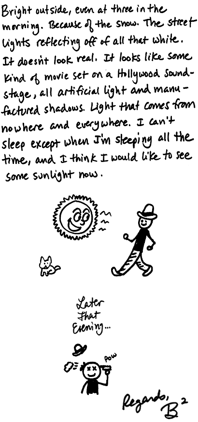
This Will Be Our Year
01/10/2005 06:14:03 AM

Stream 'em!
• • •
1. The Beautiful South, "This Will Be Our Year"
2. Decemberists, "We Both Go Down Together"
3. Sleep Station, "Caroline London 1940"
4. Eels, "The Good Old Days"
5. Laura Watling, "My Fondest Wish"
6. Pizzicato Five, "Baby Love Child"
7. Sufjan Stevens, "The Dress Looks Nice On You"
8. Damien Rice, "The Blower's Daughter"
9. Joseph Arthur, "Echo Park"
10. Kate & Anna McGarrigle, "Goodnight Sweetheart"
Compassionate Conservatism
01/11/2005 09:11:30 AM
Dave's latest movie over at Lefty.
Audio
01/14/2005 03:47:19 AM
Today's weblog entry, now in super duper audio format. (4.8 MB MP3, 5:02)
Crash Here We Go
01/17/2005 03:29:37 AM
Stream 'em!
• • •
1. The Flaming Lips, "Do You Realize?"
2. Billy Bragg, "Love Gets Dangerous"
3. Pixies, "I've Been Waiting For You"
4. Suede, "Astrogirl"
5. Creeper Lagoon, "Wonderful Love"
6. Arcade Fire, "Neighborhood #1 (Tunnels)"
7. Mercury Rev, "Across Yer Ocean"
8. Mojave 3, "Any Day Will Be Fine"
9. Tegan & Sara, "And Darling"
10. Little Wings, "Under Your Blanket"
- - - Comments - - -
COMMENT:
AUTHOR: Barb
EMAIL: bs_liang@hotmail.com
IP: 66.214.149.132
URL:
DATE: 01/17/2005 05:28:52 AM
Damn B. (I think I write Damn B alot) Do you realize by the Flaming Lips is one of my favorite songs, I first heard it from that car commerical, I think. I believe its the one with everyone waving at the car because the kid is waving at everyone.
-----
COMMENT:
AUTHOR: Amber
EMAIL: ambercastaway@yahoo.com
IP: 209.204.185.110
URL: http://accordingtoamber.blogspot.com
DATE: 01/17/2005 07:04:43 PM
Comments are back! Well, good, because I meant to write you an email telling you how I understood how you got rid of them because I've almost gotten rid of mine so many times now, I get so sick of waiting for comments, then getting themn or not getting them, but I never do take them down, I just tease myself about it, so I was going to write you and tell you how brave I thought you were but I'm so lazy so I never actually got around to it and now I see they are back and, um...
Well, YAY! 'Cause I'm too lazy to write, you know.
Great mix, too. Thanks! OH! And I was going to say in the email that I have discovered so much great music because of you, B, and I wanted to thank you profusely for the finds.
So...Big Thanks! :-)
-----
COMMENT:
AUTHOR: B²
EMAIL: b@weirdsmobile.com
IP: 24.183.35.51
URL: http://www.weirdsmobile.com/b/
DATE: 01/17/2005 07:09:00 PM
Comments are still officially dead! I was persuaded to keep them on for certain posts where people like seeing what other people say about the songs and such, but they are still "off" by default. I will keep them on for the mixtapes because I enjoy hearing if someone particularly liked any of the songs I posted.
-----
COMMENT:
AUTHOR: Scott_D
EMAIL: scottdonaldson@gmail.com
IP: 68.111.191.131
URL:
DATE: 01/17/2005 10:10:11 PM
Well, I have to say that your mix-tapes bring quite a bit of Monday-happiness for me. That and the strongbad emails. :-P
-----
COMMENT:
AUTHOR: BOB
EMAIL: bob@agirlnamedbob.com
IP: 172.151.4.55
URL: http://agirlnamedbob.com
DATE: 01/19/2005 10:16:54 PM
That Flaming Lips song is so melodic that the line "Everyone you know will die" shocks me every time.
When Giants Walked The Earth
01/17/2005 12:01:56 PM
Simon & Garfunkel, "7 O'Clock News/Silent Night" 2.8mb MP3
From the Institute for Public Accuracy, clips from Martin Luther King's sermon at the Ebenezer Baptist Church, 4/30/67:
When machines and computers, profit motives and property rights are considered more important than people, the giant triplets of racism, militarism and economic exploitation are incapable of being conquered.... [Listen]
Don't let anybody make you think that God chose America as His divine messianic force to be -- a sort of policeman of the whole world. God has a way of standing before the nations with judgment, and it seems that I can hear God saying to America: You are too arrogant! If you don't change your ways, I will rise up and break the backbone of your power...." [Listen]
- - - Comments - - -
COMMENT:
AUTHOR: BOB
EMAIL: bob@agirlnamedbob.com
IP: 172.172.230.187
URL: http://agirlnamedbob.com
DATE: 01/17/2005 12:18:54 PM
Wow, that second quote gave me the chills.
-----
COMMENT:
AUTHOR: Scott_D
EMAIL: scottdonaldson@gmail.com
IP: 68.111.191.131
URL: http://www.duringflight.com
DATE: 01/17/2005 05:27:52 PM
Thank you for this, B. Understanding the teachings of Martin Luther King is very much needed these days.
-----
COMMENT:
AUTHOR: groovebunny
EMAIL: wabbit@groovebunny.com
IP: 209.246.244.1
URL: http://www.groovebunny.com
DATE: 01/19/2005 05:15:57 PM
Thanks for posting this tribute B. Very moving picture and wonderful audio! I don't think I've seen a more wonderful tribute.
-----
COMMENT:
AUTHOR: taramis
EMAIL: taramis@fastmail.fm
IP: 67.173.244.138
URL:
DATE: 02/01/2005 11:48:09 PM
Woah. Good post. Eerie how prophetic Dr. King sounds regarding technology. Number of the beast? Oh yeah, I got several: Visa, Mastercard....
This is one of those tunes that's either unbelievably horrible or pure genius -- choose one.
Computor Rockers, "Galaxy Defenders"
- - - Comments - - -
COMMENT:
AUTHOR: Scott_D
EMAIL: scottdonaldson@gmail.com
IP: 68.111.191.131
URL: http://www.duringflight.com
DATE: 01/18/2005 06:38:11 PM
I will have to go with genius... and that album is not that easy to find.
If you like that song, try to check out "Style" by Orbital. I have it somewhere, but give me time... if you don't find it, I will! Its very much worth finding.
-----
COMMENT:
AUTHOR: Amber
EMAIL: ambercastaway@yahoo.com
IP: 209.204.185.110
URL: http://accordingtoamber.blogspot.com
DATE: 01/21/2005 10:21:44 AM
I don't know about genius but it did remind me of an old Nintendo game I played years ago, "Milon's Secret Castle" so I say...rip off! ;-)
Audio
01/18/2005 06:11:57 AM
New audio weblog entry.
Today: Neil Hamburger, Poem of the Day, and misc. blather.
(5 MB MP3, 5:17)
1000 Homo DJs, "Hey Asshole"
There's been a couple of cop cars parked across the street all morning, which makes me wonder what's going down over there. Maybe they're busting a meth lab? Anyway, all these coppers hanging around here made me think of this excellent 1990 Ministry/Jello Biafra collab. "What, are you representing? You want to throw down, punk, huh?" Classic.
Black Flag, "My War"
I don't even remember now what originally got me into Black Flag, waay back in 1983 when I was but a wee youth. Maybe I just liked the insane Raymond Pettibon album covers ["My War" cover]. Anyway, I was still into bands like ABC and Thompson Twins back then, so the first time I put on this record and heard "My War," the top of my head actually exploded all over the ceiling, which was pretty messy and I had to wear a baseball cap for a week. When Henry Rollins screams "MY WAAAARRR YOU'RE ONE OF THEM YOU SAID YOU'RE MY FRIEND BUT YOU'RE ONE OF THEM!!!!" I don't even know who "they" are, but I'm ready to burn down "their" fucking house.
updated Jimmy Buffett, "Why Don't We Get Drunk And Screw?"
Shadelade requested some Jimmy Buffett. Since I'm doing sort of a punk/industrial theme today, though, this is about the most hardcore Buffett song I can think of.
- - - Comments - - -
COMMENT:
AUTHOR: shadelade
EMAIL: brrr@coldfarmer.com
IP: 150.176.245.171
URL:
DATE: 01/19/2005 02:26:09 PM
It's freezing..where's the Buffett?
-----
COMMENT:
AUTHOR: Jim
EMAIL: chaos@corrupt.net
IP: 63.167.178.72
URL: http://chaos.corrupt.net/
DATE: 01/19/2005 02:28:40 PM
I love the Pettibon cover for Nervous Breakdown.
It's amazing you got a hold of a Black Flag record as a kid - and liked it! I never heard anything heavy as a kid and wonder how I might have reacted.
-----
COMMENT:
AUTHOR: B²
EMAIL: b@weirdsmobile.com
IP: 24.183.35.51
URL: http://www.weirdsmobile.com/b/
DATE: 01/19/2005 02:39:13 PM
Ha, that cover is awesome.
I was kind of surprised that I liked it, actually, since all I was into at the time was Europop. Van Halen was about as heavy as it got for me. I think I just hadn't heard anything up to that point that was so utterly and completely furious, and it uncorked this heretofore untapped reservoir of repressed adolescent rage. After that I went out and bought every Black Flag album I could find, along with stuff like the Circle Jerks, Dead Kennedys and X. Oddly, though, I didn't forsake the Europop, so I'd listen to "Holiday in Cambodia" and then chill out with some Depeche Mode.
-----
COMMENT:
AUTHOR: shadelade
EMAIL: brrr@coldfarmer.com
IP: 150.176.245.171
URL:
DATE: 01/25/2005 11:20:06 AM
thanks for the JB!!
The Nurturing Spider-Man
01/19/2005 04:04:31 PM
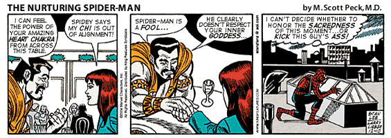
No Shame
01/19/2005 09:06:29 PM
$40 million: Cost of Bush inaugural ball festivities, not counting security costs.
22 million: Number of children in regions devastated by the tsunami who could have received vaccinations and preventive health care with the amount of money spent on the inauguration.
1,160,000: Number of girls who could be sent to school for a year in Afghanistan with the amount of money lavished on the inauguration.
$17 million: Amount of money the White House is forcing the cash-strapped city of Washington, D.C., to pony up for inauguration security.
9: Percentage of D.C. residents who voted for Bush in 2004.
2,500: Number of U.S. troops used to stand guard as President Bush takes his oath of office
200: Number of Humvees outfitted with top-of-the-line armor for troops in Iraq that could have been purchased with the amount of money blown on the inauguration.
26,000: Number of Kevlar vests for U.S. soldiers in Iraq and Afghanistan that could be purchased for $40 million.
From the Center for American Progress
Summertime In Wintertime
01/20/2005 02:39:41 PM
It's snowing like a bastard today, and it's been days since I've seen the sun. In other words, it's perfect weather for some summer music. These are five songs that embody summertime for me, for various reasons. I'd love to hear your own faves -- post 'em if you got 'em.
Tom Tom Club, "Genius Of Love"
(1981) This, to me, is the ultimate summer song -- breezy, uncomplicated, and infinitely catchy. I've heard this thing about 12,378,400 times since 1981, and it's been sampled a zillion times, but somehow I never get sick of hearing it.
Prince, "Paisley Park"
(1985) Some of these songs just wouldn't be the same, for me, if I hadn't had a car when they came out. This is groovy, trippy, What-If-Prince-Joined-The-Beatles psychedelic funk-pop at its best, and the whole Around The World In A Day album is some of the best driving music ever made.
Go-Go's, "Vacation"
(1982) It was the summer after 8th grade. My friend Danny and I both had this severe crush on this girl named Becky. We had sort of a friendly rivalry going over her, which of course was completely ludicrous because Becky not only had no idea she had these two dorks mooning over her, but she was completely out of our league in the first place. Anyway, the thing that drove Danny nuts was the fact that I lived down the street from Becky, and I'd see her around the neighborhood sometimes, and then of course call Danny right afterward, all "Hey, guess who I talked to at the market just now? Ha ha ha ha...." So one day Danny and I were on the phone talking about her, as usual, and listening to the radio, and then "Vacation" starts playing, and the deejay says "This is going out from BECKY to BRYAN!" And Danny's anguished screams mingled with my evil, cackling laughter on that beautiful summer afternoon.
The Cure, "High"
(1992) The summer of 1992, I went crazy and took off on this two-week solo road trip all over the western states. Wish played continuously in my car during that time, so this song will always remind me of driving through the Arizona desert, all crazy-eyed and gloriously unhinged.
Len, "Steal My Sunshine"
(1999) I think there's a certain time of life after which it's harder for a song to really lodge itself in your mind as a summertime song. After high school and college, it's less often that music tweaks that carefree, innocent part of your psyche -- maybe because that part of you just gets smaller and smaller as the years wear on. "Steal My Sunshine" hits the mark, though. It's one of those cheerfully infectious tunes that exists for no other reason than to make you feel good.
- - - Comments - - -
COMMENT:
AUTHOR: Scott_D
EMAIL: scottdonaldson@gmail.com
IP: 68.111.191.131
URL: http://www.duringflight.com
DATE: 01/20/2005 06:34:50 PM
Well, you started to make me feel really nostalgic, so I grabbed a few tunes together in a hurry. Some are cheesy, but at one time these songs were painstakingly placed in a perfect order on a tape cassette and used to inspire bus rides to school.
They can be found here:
http://www.the-donaldson-family.com/summer/
-----
COMMENT:
AUTHOR: Leslie
EMAIL: thynk2much@yahoo.com
IP: 81.31.96.56
URL:
DATE: 01/21/2005 04:06:06 AM
That story about the radio dedication is GENIUS.
A few from me:
Bart Davenport - "Miami Afternoon".
Something about it has that 70s soft rock quality that is just so so so summery to me. I guess from riding around in the Oldsmobile when we were little, Mom playing the radio. Also, here's why you gotta love Bart - in an interview when asked "what's the most embarrassing record you own?", he answered "I am not embarrassed of any music." A man after my own personal heart. www.bartdavenport.com
Hall & Oates - "Sara Smile".
When we first moved to Fullerton ('77?), the neighbors across the street had a jukebox full of 45s in her garage (how cool is that?!?!?!) and their daughter and I would play records and roller skate around the empty concrete floor of their garage - mostly a summer activity, I guess because that's when we had our days free. This was always a particular fave. Also from this same memory: Beach Boys, "Help Me Rhonda".
And obvious but true: Bananarama, "Cruel Summer". A classic KROQ summer song. I still love this one.
-----
COMMENT:
AUTHOR: groovebunny
EMAIL: wabbit@groovebunny.com
IP: 209.246.244.1
URL: http://www.groovebunny.com
DATE: 01/21/2005 10:31:38 AM
LOL Love the radio dedication story also! I have to agree with you on "Vacation" and "Genuis of Love"...we still hear that all over the place out here as soon as spring hits, since that's when summer really starts out here anyways. :) Another favorite I have to throw is there is "Boys of Summer" and anything Bob Marley based.
-----
COMMENT:
AUTHOR: Amber
EMAIL: ambercastaway@yahoo.com
IP: 209.204.185.110
URL: http://accordingtoamber.blogspot.com
DATE: 01/21/2005 12:41:45 PM
Ribbon in the Sky by Stevie Wonder
The first summer my husband I actually lived together. So in love, so happy. It seemed this song was *always* coming on the jazz station we listened to while we basked in our gorgeous, old-fashioned backyard with the old apple tree, the birds, the cats chasing the birds, lazily sipping on some cold white wine and watching the bluer-than-blue sky. Everything sparkled. Everything was beautiful. And it all fit.
Kiss Me - Sixpence None the Richer
I listened to this incessantly on my headphones the summer I was into tanning and working out obsessively so I could look hot for my boyfriend (who later became my husband). I also saw them at our local county fair that year. I never got tired of hearing this.
Independence Day - Elliott Smith
This was the summer we moved the house we're living in now. Listening to this song on the wireless speaker on the front porch, alternatively reading and watching the sunset. Or playing it on the car stereo while we went wine tasting. The whole album 'XO' makes me think of summer.
Butterfly - Crazy Town
My husband, my daughter and myself in the backyard of the old house, putting together a crazy comedy movie idea spoofing the Wine Industry (something we are all a part of in one way or another). Lucy was to be the insanely greedy spoiled rich-bitch whose daddy died and left her a vineyard. I was in charge of the soundtrack. This song was to be played at the beginning during the credits where we see a glimpse into the Wine Heiress' lifestyle.
Of course, this wine industry spoof idea has since been STOLEN from us and basically corrupted beyind all recognition in the movie "Sideways". THAT WAS OUR IDEA! MINE! MINE! MINE! And we're suing." *ahem*
Someday - Sugar Ray
I remember hanging out downtown at the popular and gorgeous Mexican restaurant that opened that year which had a large patio area where you could see the heart of downtown. Watching the tourists and the crazies meander down the sidewalk while we'd sit for hours watching them, listening to music, wolfing down chips and salsa, as friends would come and go (Hey! Where've you been? GOOD SEEING YOU! We're headed to the coast for some crab, wanna come? My God, when did you get that tattoo?). Can't hear this song without remembering that.
Okay, so they're all pretty mainstream. But then, my favorite summer songs always seem to be. :-)
-----
COMMENT:
AUTHOR: Brooks
EMAIL: brooks@ayola.com
IP: 66.27.171.161
URL: http://ayola.com/blog
DATE: 01/24/2005 12:21:44 AM
Summertime Rolls by Jane's Addiction is my Stairway to Heaven.
From The Vault
01/20/2005 04:47:37 PM
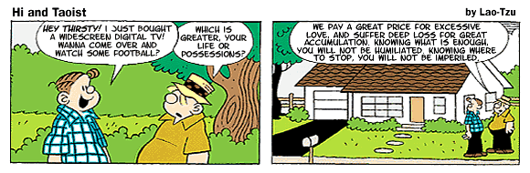
The Kevin Tapes
01/21/2005 04:55:59 AM
Today's audio entry is a Very Special Episode:
The Kevin Tapes, Part 1
(16.9 MB, 17:38)
The other day I stumbled across a pile of old cassette tapes containing audio letters from Kevin of Dilettante, that he had sent me over 15 years ago. I decided to comb through them for some highlights to share with you. Won't you join me on a stroll down Memorex lane?
- - - Comments - - -
COMMENT:
AUTHOR: Susan
EMAIL: susanpatton@spamcop.net
IP: 66.188.147.38
URL: http://www.livejournal.com/users/tundrababe/
DATE: 01/21/2005 07:22:55 AM
Hee! That's awesome that he made you all those tapes. I hate listening to myself on tape.
John F. Kennedy Jr. will be president...d'oh!
-----
COMMENT:
AUTHOR: Ryan Schultz (Quiplash)
EMAIL: rryanschultz@gmail.com
IP: 24.76.6.12
URL: http://ryanschultz.ca
DATE: 01/21/2005 08:49:14 AM
Hi Bryan!
I have nominated your blog to the new Flickr group "My Favourite Blogs":
http://flickr.com/photos/ryan/3608187/
The group is here:
http://www.flickr.com/groups/faveblogs/
--Ryan.
-----
COMMENT:
AUTHOR: Jim
EMAIL: chaos@corrupt.net
IP: 63.167.178.72
URL: http://chaos.corrupt.net/
DATE: 01/21/2005 01:49:37 PM
Food, folks, and fun! That was the greatest of McDonald's jingles. Which isn't saying much, I guess.
-----
COMMENT:
AUTHOR: The Raz
EMAIL: KevinRazban@cox.net
IP: 68.5.116.38
URL:
DATE: 01/21/2005 02:33:09 PM
This is all news to me...thanks Bryan, for clearing it with me first! I abhor hearing myself on tape, too. Especially a younger version of myself.
-----
COMMENT:
AUTHOR: B²
EMAIL: b@weirdsmobile.com
IP: 24.183.35.51
URL: http://www.weirdsmobile.com/b/
DATE: 01/21/2005 02:37:31 PM
What the hell? Your tapes were brilliant! You should hear mine. I actually nodded off, I was so boring.
-----
COMMENT:
AUTHOR: BOB
EMAIL: bob@agirlnamedbob.com
IP: 172.151.4.55
URL: http://agirlnamedbob.com
DATE: 01/22/2005 12:28:49 AM
The little kid tapes were so cute!!
-----
COMMENT:
AUTHOR: The Raz
EMAIL: KevinRazban@cox.net
IP: 68.5.116.38
URL:
DATE: 01/24/2005 09:15:53 PM
On second thought, it wasn't such a bad audio blog from you after all. Plus I need the free publicity.
You're Gonna Make It Through
01/21/2005 10:22:42 AM
I'm heading out of town this weekend, so here's the Monday Mix Tape, three days early. Am I not generous?
• • •
Stream 'em!
• • •
1. Frank Sinatra, "I've Got My Love To Keep Me Warm"
2. Laura Cantrell, "Yonder Comes A Freight Train"
3. The Finn Brothers, "Luckiest Man Alive"
4. Adorable, "Breathless"
5. Björk, "Come To Me"
6. Delays, "Hey Girl"
7. Eels, "Somebody Loves You"
8. Copeland, "Brightest"
9. Softies, "Tracks & Tunnels"
10. Venerea, "On The Road Again"
- - - Comments - - -
COMMENT:
AUTHOR: groovebunny
EMAIL: wabbit@groovebunny.com
IP: 209.246.244.1
URL: http://www.groovebunny.com
DATE: 01/21/2005 10:33:12 AM
Based on that list, I'd say someone is off for a nice romantic weekend. :) Have a great time!
-----
COMMENT:
AUTHOR: B²
EMAIL: b@weirdsmobile.com
IP: 24.183.35.51
URL: http://www.weirdsmobile.com/b/
DATE: 01/21/2005 10:37:27 AM
How does it go...ah, yes:
^_^
-----
COMMENT:
AUTHOR: Collin
EMAIL: collin@grahamcenter.com
IP: 67.41.75.54
URL: http://fizzleandpop.blogspot.com
DATE: 01/24/2005 10:40:16 AM
Totally unrelated to your weekend of love (which I hope went wonderfully) a friend sent me a link that I thought you might enjoy, assuming you haven't already 'been there, seen that':
http://spacelobster.com/gau/
-----
COMMENT:
AUTHOR: Scott_D
EMAIL: scottdonaldson@gmail.com
IP: 68.111.191.131
URL: http://www.duringflight.com
DATE: 01/24/2005 10:45:27 PM
I've had this mix on a constant loop at work today.
-----
COMMENT:
AUTHOR: Alexa
EMAIL: alexa@nyhotties.com
IP: 4.40.39.30
URL: http://www.nyhotties.com
DATE: 01/25/2005 12:38:20 AM
I totally love Bjork.
-----
COMMENT:
AUTHOR: taramis
EMAIL: taramis@fastmail.fm
IP: 67.173.244.138
URL:
DATE: 02/01/2005 11:31:42 PM
Thank you kindly for the mp3 mix!
-----
COMMENT:
AUTHOR: Man with no Name
EMAIL: hellothere@rec-all.com
IP: 203.200.206.4
URL: http://thisucks.rediffblogs.com
DATE: 02/03/2005 05:24:41 AM
Thanks a lot for the songs.. I liked the softies and somebody loves U too...
-----
COMMENT:
AUTHOR: nancy
EMAIL: nancy.murphy@gmail.com
IP: 24.33.72.207
URL: http://www.uncollaborative.blogspot.com
DATE: 02/05/2005 10:45:13 AM
I don't know you, but you are wonderful. thank you for these songs. I love the softies and haven't listened to them since college. yay.
Not Dead (Yet)
02/02/2005 08:42:16 AM
For the past couple of weeks, I've been helping my lady move to town, via the Madison Cool People Relocation Program. It's reaching the final, fit-the-couch-through-the-too-small-doorway phase, so (ir)regular posting should resume presently. Apologies to anyone I owe e-mail to, or have neglected to acknowledge in some other way that exceeds the level of flakiness that I exhibit under normal conditions.
When You Come Around
02/07/2005 12:40:53 AM
Stream 'em!
• • •
1. Of Montreal, "Everything Disappears When You Come Around"
2. Ben Kweller, "Falling"
3. Copeland, "There Cannot Be A Close Second"
4. Rufus Wainwright, "Peach Trees"
5. The Story, "Love Song"
6. Beth Hirsch, "Until I Met You"
7. Lucky Jim, "You Stole My Heart Away"
8. Damien Rice, "Cannonball"
9. Mysteries Of Life, "That's How Strong My Love Is"
10. Me First & The Gimme Gimmes, "Phantom Of The Opera Song"
- - - Comments - - -
COMMENT:
AUTHOR: bakiwop
EMAIL: bino1@hotmail.com
IP: 68.114.238.99
URL: http://bakiwop.f2o.org
DATE: 02/07/2005 08:24:56 AM
the streaming thing isn't work for me on winamp (winxp), i just put up my own and had to separate the files in the .m3u file with a line break - could that be the same issue here?
-----
COMMENT:
AUTHOR: mike
EMAIL: mike@whybark.com
IP: 216.173.212.237
URL: http://mike.whybark.com
DATE: 02/07/2005 08:52:38 AM
hey, cool! MOL is from my hometown and I have known Jake and Freda since they were teenagers! Love that song. Love that whole album, actually.
-----
COMMENT:
AUTHOR: B²
EMAIL: b@weirdsmobile.com
IP: 24.183.35.51
URL: http://www.weirdsmobile.com/b/
DATE: 02/08/2005 01:30:54 AM
Baki: Hmm, I'm not sure why it isn't working for you -- being on OS X, it's hard to tell what the file looks like on Windows. For me, the file shows line breaks between the items, and it's essentially the same m3u file that I've been using all along, just with the mp3 filenames changed. Again: Hmm.
Mike: Wow, I feel like I'm sort of semi-connected with coolness!
-----
COMMENT:
AUTHOR: bakiwop
EMAIL: bino1@hotmail.com
IP: 68.114.238.99
URL: http://bakiwop.f2o.org
DATE: 02/08/2005 06:07:38 AM
i never tried to stream them from your site before, but for some reason my winamp won't do it, even if i mess with your m3u file. oh well, i just download them and play 'em.
Six Cups of Coffee
02/07/2005 01:33:16 PM
I've noticed that caffeine has a similar effect on me as alcohol, in that I get this feeling of connectedness, and less resistance to the idea of other people, and this need to communicate and share some kind of experience in a common headspace. Another similarity: this urge to communicate is in no way related to the quality of the resulting communication, and if it is related at all it's in an inverse proportion.
Writing anything of substance while in this condition is like navigating a maze while wearing rocket-powered rollerskates.
Edit: I forgot to mention another common effect of caffeine and alcohol: nausea. Oog.
- - - Comments - - -
COMMENT:
AUTHOR: Rengirl
EMAIL: imac@pixelsensei.com
IP: 12.22.65.5
URL:
DATE: 02/07/2005 02:46:17 PM
I just want to say that the rocket-powered rollerskates analogy really cracks me up... not unlike your other analogies. I wonder - how do you come up with this stuff?
-----
COMMENT:
AUTHOR: B²
EMAIL: b@weirdsmobile.com
IP: 24.183.35.51
URL: http://www.weirdsmobile.com/b/
DATE: 02/07/2005 02:51:57 PM
Rengirl: Bitter personal experience!
-----
COMMENT:
AUTHOR: Susan
EMAIL: susanpatton@spamcop.net
IP: 68.112.157.154
URL: http://www.livejournal.com/users/tundrababe/
DATE: 02/07/2005 03:38:17 PM
Caffeine and alcohol mixed is the weirdest feeling...you don't know if you should be stumbling around or bouncing around. It's a wacky state of limbo.
-----
COMMENT:
AUTHOR: groovebunny
EMAIL: wabbit@groovebunny.com
IP: 68.224.168.139
URL: http://www.groovebunny.com
DATE: 02/07/2005 04:02:14 PM
Where can I get a pair of those rocket powered rollerskates? :)
The only time I socialize in the office is during that first morning cup of coffee. And definitely the quality of conversation is questionable. Cause really I'm getting a little tired of hearing about my co-worker's dog and her weight issues.
-----
COMMENT:
AUTHOR: L Man
EMAIL: littlemanclan@gmail.com
IP: 65.32.122.45
URL: http://littlemanclan.typepad.com/lmc/
DATE: 02/07/2005 06:35:01 PM
Better stay away from Budweiser's new caffiented brew, then. Actually, stay away from crappy Bud products period.
Good to have you back B.
-----
COMMENT:
AUTHOR: BOB
EMAIL: bob@agirlnamedbob.com
IP: 172.162.161.81
URL: http://agirlnamedbob.com
DATE: 02/07/2005 10:55:58 PM
Six cups? That's beyond rocket-powered. You must be close to breaking the sound barrier. =)
-----
COMMENT:
AUTHOR: B²
EMAIL: b@weirdsmobile.com
IP: 24.183.35.51
URL: http://www.weirdsmobile.com/b/
DATE: 02/08/2005 02:11:08 AM
BOB, you said it. It's 2 a.m. and I'm still rushing on my run.
-----
COMMENT:
AUTHOR: jennifer and the beans
EMAIL: beanmom@beanmom.com
IP: 69.141.20.124
URL: http://www.kjsl.com/~beanmom/beandiary.html
DATE: 02/08/2005 10:21:14 AM
And my problem is, I have my coffee about an hour before my husband has his. So it's kicking in big-time for me, and I'm thinking of allthisstuffIneedtotellhim, and he's just starting on his first cup and blinking at me in a puzzled-lizard kind of way... *sigh*
-----
COMMENT:
AUTHOR: maikopunk
EMAIL: kidxine@hotmail.com
IP: 142.52.81.12
URL: http://maikopunk.blogspot.com
DATE: 02/08/2005 11:59:35 AM
Interaction with other humans without the aid of coffee. No way!
I've always wondered about the effects of caffeine and alcohol together, as in those drinks mixed with Red Bull. Do they make you all hyper and happy or is it just glorified Irish coffee?
My Dark Places
02/07/2005 04:02:43 PM
Memory is a strange thing, so much more fluid and mutable than we imagine. When I try to recall an event from the past, I think of it like trying to make out something in the far distance, squinting my eyes and straining to put that blurry object into recognizable focus. But this assumes that the object is fixed, that there's some kind of concrete, definite thing there, and if I could perceive it clearly I would see some kind of absolute truth.
I was a little kid of about four when I saw my first horror movie, Suspiria. I remember riding in the back of my parents' station wagon to the drive-in theater. We weren't actually there to watch Suspiria, but some romantic potboiler called Love for Sale. Suspiria was playing on the second screen. I got bored pretty quickly with Love for Sale, though, so I turned around and started watching Suspiria out the rear window. Despite the lack of sound (or because of it), it scared the hell out of me. I was already scared by the very idea of Suspiria, because of this creepy poster I saw a few days before, with the title printed in puffy pinkish letters made to look like flesh, which for some reason was absolutely horrifying to me. And I remember two scenes from the movie: one where some knife-wielding maniac is repeatedly stabbing a woman; and one where a woman is in a darkened room and suddenly maggots start raining down on her.
The weird thing about this memory is that some of it is completely false, and I don't know how much of the rest of it (except for the two scenes from the movie) is true. There's absolutely no way that I could have seen Suspiria when I was four -- the movie didn't even come out until 1977, when I was eight or nine. And as far as I can tell from searching the IMDB, there is no such movie as Love for Sale (there is a 1960 Belgian movie, La Tricheuse, whose English title was Love for Sale, but it's pretty unlikely that it would have played at a drive-in theater in Shreveport, Louisiana in 1972). But I can remember the drive to the theater from the shabby apartment where we were living at the time. I remember -- clearly -- things that obviously didn't happen, like hearing the squishy chuff chuff sounds of the killer's knife stabbing into the victim's body.
The real first movie I remember seeing when I was four years old, then, wasn't Suspiria, but another horror movie, The Exorcist. My parents didn't really grok the concept of a babysitter, so they took me along to all kinds of movies like this. I think they figured I was too young to understand what I was seeing. It wasn't until I was about 11 or 12 that they started getting all touchy about my obsession with horror movies, and by then it was too late, my mind had been permanently warped.
I'm a gorehound, but just about the most queasy, scaredy-cat gorehound in the entire Horror Movie Club. I don't know what I'm doing watching these movies. Something draws me to them, but at the same time they make me nauseated, and afterwards I'm afraid to even go to the bathroom in the dark. At 36, I still believe in ghosts and monsters and boogiemen. The Blair Witch Project is one of the scariest movies ever, as far as I'm concerned, because that final scene in the basement of that house is taken straight out of my worst nightmares. I feel compelled to watch these movies, but afterwards I feel sick and wish I hadn't. I guess I'm a shame-based gorehound.
There are movies, like Cannibal Ferox, that I don't know if I can bring myself to watch, just from reading the plot summaries. Usually they're not as bad as I'm afraid they might be. Like Nekromantik, the German splatter flick about necrophiliacs in love. Not that it wasn't extremely disgusting, but that movie oddly ended up seeming kind of beautiful, in a warped way. Towards the end, the hero, whose girlfriend has left him for a corpse, strolls through a sunny meadow, meditating on...I don't know, life after necrophilia, I guess...and it's kind of a funny scene. The finale is about as gross as anything I've ever seen in a movie, but it's all so over the top that it's more comic than horrifying.
I was far more horrified by The Act of Seeing with One's Own Eyes, a 1971 experimental film by avant garde filmmaker Stan Brakhage that's basically just a half-hour of real autopsy footage, presented sans narration or sound. I had to watch that movie for a film class assignment, and I could appreciate that film on an artistic level, but I wouldn't watch it again. I think it's the corruption of the human body that really bothers me. I don't get off on that in the slightest. There are other things about horror movies that I do enjoy, like the chasing and the jumping out of shadows and all of that "scary movie" stuff, but the violation of the flesh is intensely disturbing to me. There's no sense in which I enjoy seeing that. So why am I drawn to movies that depict this? I wasn't even honest above when I said I wouldn't watch the Brakhage film again, because I did watch it a few months ago when they came out with a collection of Brakhage shorts. I could only take a few minutes of it, but I still watched. Something made me see it.
I'd like to think that it's just garden-variety voyeurism, coupled with a fascination with the dark side of human nature. But I'd especially like to believe that I'm looking into that darkness from outside, that I'm not staring into a mirror.
- - - Comments - - -
COMMENT:
AUTHOR: Jim
EMAIL: chaos@corrupt.net
IP: 63.167.178.72
URL: http://chaos.corrupt.net/
DATE: 02/07/2005 05:19:54 PM
Maybe you continue to see these movies because they still create such an intense reaction in you? Even though it's a 'bad' reaction, it's pretty rare that anyone will respond that strongly to a movie, so in a way, it's kind of a blessing.
-----
COMMENT:
AUTHOR: Joel Gosse
EMAIL: drumsfeld@killiraqis.com
IP: 165.121.32.147
URL: http://www.iww.org
DATE: 02/07/2005 09:18:55 PM
I watch it every so often. I think it is marvelous, until the end, though. Then it seems to implode on itself and become almost comical; but maybe that is just my way of delaing with a real good case of film horror - like Texas Chainsaw Massacre (took my baby away from me), and Rosemary's Baby (although that could be due to Ruth Gordon's awesome perfromance that calls attention away from the increasingly paranoic atmosphere.)
-----
COMMENT:
AUTHOR: Amelia
EMAIL: Belle_Lost@yahoo.com
IP: 205.188.116.130
URL: http://sugarcoatedletdown.blogdrive.com
DATE: 02/08/2005 01:21:43 AM
I think that Suspiria is being remade. Unless the two movies have the same name. IMDB projects that it's supposed to be out this year.
-----
COMMENT:
AUTHOR: B²
EMAIL: b@weirdsmobile.
com
IP: 24.183.35.51
URL: http://www.weirdsmobile.com/b/
DATE: 02/08/2005 02:07:52 AM
Jim: That might be true. I'm drawn to stories that evoke strong feelings, so why shouldn't I like stories that horrify and disgust me? In a way it does make me feel more alive and connected with the world. Horror movies also tend to offer a vision of the world that, while unpleasant, is at least possessed of some kind of moral clarity. Total evil is scary and to be avoided, but in a way I find it preferable to mundane, garden variety stupidity and cruelty.
Mr. Gosse: Which movie are you referring to -- Suspiria? If so, I'd agree that the ending is kind of a letdown. It's pretty scary when you don't know who the culprit is, but when everything's revealed, it's all so improbable that the scariness becomes less creepy and more conventional. Still, the razor wire sequence alone makes it one of the most scary-ass horror movies ever.
Amelia: Dario Argento apparently said that the script for the remake was crap (I think his word for it was somewhat stronger, though), so my hopes for that one aren't high. Frankly, I don't think any American mainstream film has the guts to attempt the level of sheer cinematic sadism that Argento's film achieves, so all that's left is the basic story, which is...basic.
-----
COMMENT:
AUTHOR: Leslie
EMAIL: thynk2much@yahoo.com
IP: 81.31.96.56
URL:
DATE: 02/08/2005 08:55:30 AM
It would be nice to think we're not looking into a mirror with this stuff.... but in my deepest heart of hearts, I don't believe that's true. That mirror is reflecting only one part of us though....
I really can't do much of the intense horror movie thing because I literally don't sleep afterward. But I looove movies that explore the fucked-up dark side of stuff like "Ginger Snaps" - was watching it with a friend a few weeks ago, and she was pretty grossed out by it and I thought, hey yeah maybe this is kinda gross. :)
I am TOTALLY fascinated by the false memory. Isn't that the most amazing phenomenon? I have a clear memory of being maybe 2yo (?) and sitting in a room full of huge stuffed animals that my grandparents had given me. But I have seen a photo of this exact thing and truly cannot tell if I really remember it or whether I have generated a memory from the photo. SO WEIRD. Memories seem so genuine. Strange to think they're not really much different than a dream.
-----
COMMENT:
AUTHOR: B²
EMAIL: b@weirdsmobile.com
IP: 24.183.35.51
URL: http://www.weirdsmobile.com/b/
DATE: 02/08/2005 10:32:41 AM
Leslie: You're probably right, it is a mirror reflecting some part of us. I suspect there are a lot of people who are separated from their inner psychopath by just a thin tissue of humanity.
False memories really are amazing. I have one memory that I know is completely untrue, of having climbed the stairs of the steeple of my elementary school chapel with a friend of mine, and performed some kind of Satanic ritual. I know for a fact that it didn't happen, yet many elements from that memory feel completely real to me. It's just bizarre how these things can be created out of nothing and still be as convincing as your memory of last night's dinner. Our sense of reality is basically determined by our brains.
-----
COMMENT:
AUTHOR: Leslie
EMAIL: thynk2much@yahoo.com
IP: 81.31.96.56
URL:
DATE: 02/08/2005 11:41:04 AM
I'm sure your elementary school, and your Lord, will be relieved to know that memory was false. ;)
-----
COMMENT:
AUTHOR: Ross
EMAIL: broken.sounds@gmail.com
IP: 195.93.21.38
URL: http://brokensounds.blogspot.com
DATE: 02/08/2005 01:03:16 PM
Suspiria is a deeply unsettling movie. I have seen it about one and a half times and am unsure if I would ever want to see it again. What really bothers me is that Dario Argento has a major jones about killing women... not just killing them, but torturing them for minutes on end. The sequence in which the girl is chased through the school at night only to fall into a pit of barbed wire is deeply unpleasant, not just for the gruesome imagery or the chuff chuff sound of the knife, but for the subtext. It just really bothers me. That said, one of my favourite Horror movies is the Evil Dead, so I can't really defend myself there. Lol. On a note about memory, my friend's brother made me watch that movie when I was about 11 and, surprisingly enough, it really gave me the willies. I couldn't sleep for weeks after that and was scared of the dark until I hit my early teens. I rewatched the film a few years ago, and before I did, even the idea of it really scared me. I know that the special effects are not great, and the acting is less than convincing, but somewhere in my mind the association of being scared still lingers on. Even thinking about it now gives me the willies all over again. It's funny the way your mind plays games with you that way. Nice site design, by the way. Good work.
-----
COMMENT:
AUTHOR: B²
EMAIL: b@weirdsmobile.com
IP: 24.183.35.51
URL: http://www.weirdsmobile.com/b/
DATE: 02/08/2005 02:42:29 PM
Ross: That's what bothers me about Suspiria -- it's not so much about gore as it is about pain and suffering. That razor wire sequence is probably the most agonizing thing I've ever seen in a movie. [SPOILERS FOLLOW] The terrified woman goes through this long, drawn-out chase, trying to climb up boxes, falling, nearly getting caught, barely escaping, getting put through hell, and then just when you think she's going to make it, she falls into the razor wire, and then gets her throat casually cut. It's torture for the character, and torture for the audience. And the thing is, it's not even that the scene is bloody or especially graphically violent in a Friday the 13th kind of way...it's just cruel, in a way that hurts your spirit to watch. I have to admire Argento's artistry, but man, what is going on in his head?
-----
COMMENT:
AUTHOR: Ross
EMAIL: rossisathome@aol.com
IP: 195.93.21.38
URL: http://brokensounds.blogspot.com
DATE: 02/08/2005 06:22:27 PM
Yeah, you have to wonder about old Dario. Given that he kills his daughter (she's acting, that is)in Trauma as well. There's something not quite right about that fellow.
-----
COMMENT:
AUTHOR: mike
EMAIL: mike@whybark.com
IP: 216.173.212.237
URL: http://mike.whybark.com
DATE: 02/08/2005 11:48:36 PM
See, now, that's film writing. I want more like this, becasue I don;t really care what is on screen, I care what is in your head, and want to read abolut it, and find that much more interesting than actually watching movies.
Generally speaking, with allowances for hyperbole, I mean.
I should try to write about Charlie and the Choclolate Factory in an attempt to dredge up as much as I can of my initial experience of watching it on release in '72.
-----
COMMENT:
AUTHOR: Ross
EMAIL: rossisathome@aol.com
IP: 195.93.21.38
URL: http://brokensounds.blogspot.com
DATE: 02/09/2005 08:37:46 AM
Now, that is a creepy film.
I remember being freaked out when I first saw Charlie, and I imagine I will be freaked out if I go and see the remake.
Besides, it's surprising that they have remade the movie, and that the studio has backed it, given that it is about a strange, isolated man luring young children to his factory with the promise of sweets.
I'm sure Roald Dahl was making a point (and if you have read any of his adult stories, then you will know what I mean) back then, about the darker things going on beneath society's calm veneer.
It's just odd that the movie has been adopted as this nicey nice picture about sweeties and oompah loompahs.
Then again, the Wizard of Oz freaks me out (those flying monkeys: argh), so I can't really talk.
-----
COMMENT:
AUTHOR: Mr. Gosse
EMAIL: ???@???.com
IP: 165.121.34.80
URL: http://?
DATE: 02/09/2005 06:09:25 PM
I agree with Ross; I have as of late formulated a pet theory that the first film version of Willie Wonka and the Chocolate Factory is nothing more than a subtext for pedophilia and homosexuality - and I don't mean that to be bad or scary, but a little boy getting to blast off in a secret elevator/rocket/phallus with an older man - wow.
-----
COMMENT:
AUTHOR: Ross
EMAIL: rossisathome@aol.com
IP: 195.93.21.38
URL: http://brokensounds.blogspot.com
DATE: 02/09/2005 08:09:12 PM
Dude, now you're freaking me out.
-----
COMMENT:
AUTHOR: Scott D
EMAIL: scottdonaldson@gmail.com
IP: 68.111.191.131
URL: http://www.duringflight.com/groundcontrol
DATE: 02/09/2005 11:46:01 PM
yeah... i m all about theories but that is just a tad bizarre. It's just a childrens tale.:-P
-----
COMMENT:
AUTHOR: hannah
EMAIL: misshannah@livejournal.com
IP: 128.104.27.
34
URL:
DATE: 02/10/2005 11:35:43 AM
In the book (and in the movie, I think) they "blast off" in the Great Glass Elevator, which is not exactly phallic.
-----
COMMENT:
AUTHOR: B²
EMAIL: b@weirdsmobile.com
IP: 24.183.35.51
URL: http://www.weirdsmobile.com/
b/
DATE: 02/10/2005 12:14:14 PM
I can't speak to the pedophilia angle, but I can see how the whole storyline of the grown-but-childlike adult who bonds with the one "special" child out of the mass of un-special brats can really play to the pedo mentality. I mean, it's basically the Michael Jackson story in a nutshell.
Eels, "I Need Some Sleep"
This is one sad, sad song, don't you think?
- - - Comments - - -
COMMENT:
AUTHOR: bakiwop
EMAIL: bino1@hotmail.com
IP: 68.114.238.99
URL: http://bakiwoo.f2o.org
DATE: 02/08/2005 06:12:47 AM
i find it, oddly, comforting. it's like being sad is okay - not all that bad actually. i think i am going to have to buy an eels cd.
-----
COMMENT:
AUTHOR: Barb
EMAIL: bs_liang@hotmail.com
IP: 66.214.149.132
URL:
DATE: 02/11/2005 03:28:04 PM
it's my song. i thought it was interesting it was on the shrek 2 soundtrack.
Dad Lets Me Drive Real Slow on the Driveway
02/08/2005 03:03:27 PM
I was just looking at iTunes and realized that I now have 90 gigabytes of music files stored on my computer. If I played them all from start to finish, it would take around 50 days to get through the whole collection. 70 of those gigabytes are just from the past year.
Part of me rubs my hands together and says, "Excellent." The other part of me cries and wants pancakes.
- - - Comments - - -
COMMENT:
AUTHOR: monkeyinabox
EMAIL: chris@monkeyinabox.net
IP: 72.0.160.193
URL: http://www.monkeyinabox.net
DATE: 02/08/2005 04:31:40 PM
Yep, I've done the same thing. Makes you realize you might have too much. BUt then again, you can never have too much. Maybe too much at the all you can eat pancakes at IHOP.
-----
COMMENT:
AUTHOR: Scott D
EMAIL: scottdonaldson@gmail.com
IP: 146.244.137.88
URL:
DATE: 02/08/2005 05:05:38 PM
As you know, my pile of music is back at a healthy level. I have been finding so much great music that I want to buy, but I am on a limited budget. As of now I am up to 72 gigs of music and my computer hates me for it.
I tried to view my collection of tunes by artist and my pc made a whimpering noise and, from what I believe to be angst, immediately spit out my DVD of Anchorman and disallowed any use of my mouse. No amount of praise would bring back my irate processor, so I had to reboot.
Pancakes will be on the order.
-----
COMMENT:
AUTHOR: Sherri
EMAIL: Sylkenvelvet@yahoo.com
IP: 68.59.165.165
URL: http://www.formyselfandstrangers.blogspot.com
DATE: 02/08/2005 05:29:38 PM
I'll bring the blueberry syrup.
Ya know, if you only listened to a 5 to 10 second sample of each song, you'd get through them SO much faster...
-----
COMMENT:
AUTHOR: Rengirl
EMAIL: imac@pixelsensei.com
IP: 4.43.203.104
URL:
DATE: 02/08/2005 09:47:06 PM
90 gigs!!! Wow. I only have 12 gigs. Keep posting those Mix Tapes and I'll catch up someday.
Mmm... wagon filled up with pancakes...
-----
COMMENT:
AUTHOR: BOB
EMAIL: bob@agirlnamedbob.com
IP: 172.162.161.81
URL: http://agirlnamedbob.com
DATE: 02/09/2005 12:36:22 AM
Great. Now I want pancakes.
-----
COMMENT:
AUTHOR: Annelogue
EMAIL: anne.breiehagen@gmail.com
IP: 193.3.142.121
URL: http://www.annelogue.com
DATE: 02/09/2005 08:25:54 AM
Yup...you
made me hungry for pancakes, too!
-----
COMMENT:
AUTHOR: B²
EMAIL: b@weirdsmobile.com
IP: 24.183.35.51
URL: http://www.weirdsmobile.com/b/
DATE: 02/09/2005 08:31:57 AM
Dang, all I have to do is mention "pancakes" and you want pancakes. You guys are very suggestible. On the other hand, maybe it was the "pancake" and "crying" combo that did it for you.
-----
COMMENT:
AUTHOR: j-a
EMAIL: jeonga_kim@yahoo.co.uk
IP: 24.193.121.227
URL: http://www.whatarewedoinghere.blogspot.com
DATE: 02/09/2005 10:58:17 AM
i was just about to say 'i want pancakes, too'...
-----
COMMENT:
AUTHOR: hannah
EMAIL: misshannah@livejournal.com
IP: 128.104.27.34
URL:
DATE: 02/09/2005 01:00:07 PM
gah! Damn that subliminable messaging!
-----
COMMENT:
AUTHOR: jennifer and the beans
EMAIL: beanmom@beanmom.com
IP: 69.141.20.124
URL: http://www.kjsl.com/~beanmom/beandiary.html
DATE: 02/09/2005 03:59:52 PM
Goddammit! Pancakes! Shit!! You know, we don't even HAVE any IHOPs around here. How messed-up is that??
I only have about a gig and a half, because I am SO SO SO ruthless about constantly pruning (do I still really like this? do I need to own it? am I getting sick of it?). If I let myself go, I'd have filled up the drive.
-----
COMMENT:
AUTHOR: RuKsaK
EMAIL: ruksakisland@hotmail.com
IP: 211.109.187.61
URL: http://ruksak.blogspot.com/
DATE: 02/11/2005 05:08:12 AM
Josh Beach sent me and I like your blog - have linked you and will be back for a good rummage later
-----
COMMENT:
AUTHOR: Barb
EMAIL: bs_liang@hotmail.com
IP: 66.214.149.132
URL:
DATE: 02/11/2005 03:27:17 PM
so when are the pancakes coming in the mail??
-homer
haha.
and where is my french toast. you bastard.
-----
COMMENT:
AUTHOR: Smivey
EMAIL: smivey@yahoo.com
IP: 24.126.173.160
URL: http://smivey.blogspot.com
DATE: 02/15/2005 12:15:28 AM
You just now realized this? Man, if only you could still share iTunes libraries over the Web. Steve Jobs giveth and Steve Jobs taketh away.
Why Am I So Real?
02/10/2005 12:31:49 PM
People can take everything away from you
But they can never take away your truth
But the question is...
Can you handle mine?
Britney Spears, "My Prerogative"
- - - Comments - - -
COMMENT:
AUTHOR: Jim
EMAIL: chaos@corrupt.net
IP: 63.167.178.72
URL: http://chaos.corrupt.net/
DATE: 02/10/2005 01:37:54 PM
I'm glad to see that an artist like Bobby Brown is finally getting the respect from the contemporary music community.
-----
COMMENT:
AUTHOR: Sherri
EMAIL: Sylkenvelet@yahoo.com
IP: 68.59.165.165
URL: http://www.formyselfandstrangers.blogspot.com
DATE: 02/10/2005 03:02:08 PM
that picture just scares me. This is what happens when you eat your own hair.
-----
COMMENT:
AUTHOR: Scott D
EMAIL: scottdonaldson@gmail.com
IP: 146.244.138.146
URL: http://duringflight.com/groundcontrol/
DATE: 02/10/2005 03:54:45 PM
From what I have heard on the radio, our Britney might be a single gal once again. Shocked?
-----
COMMENT:
AUTHOR: hannah
EMAIL: misshannah@livejournal.com
IP: 128.104.27.34
URL:
DATE: 02/10/2005 04:54:37 PM
Yuck.
-----
COMMENT:
AUTHOR: Rachel
EMAIL: teenagesupervillain@yahoo.com
IP: 24.247.173.194
URL:
DATE: 02/10/2005 05:18:18 PM
Apparently Britney Spears' new look is "David Bowie Minus Talent."
-----
COMMENT:
AUTHOR: Ross
EMAIL: broken.sounds@gmail.com
IP: 195.93.21.38
URL: http://brokensounds.blogspot.com
DATE: 02/11/2005 07:08:16 AM
I am sorely tempted to write something along the lines of "What? David Bowie is talented?", but I can imagine that will send some folks into a fury, so I shall refrain.
Perhaps a better thing to do is to once again point out that "Britney Spears" is an anagram of "Presbyterians".
"Michael Bolton", meanwhile, is an anagram of "I'm the local nob".
"Clint Eastwood" is an anagram of "Old West Action".
Fun, fun, fun.
-----
COMMENT:
AUTHOR: Scott D
EMAIL: scottdonaldson@gmail.com
IP: 68.111.191.131
URL: http://www.duringflight.com/groundcontrol
DATE: 02/11/2005 10:54:20 AM
Yeah, I would have defended Bowie to the death. But lets not forget the beloved anagram of "Trout Fishing in South-Central Wisconsin" is "Oh, a tit-surfing chronicle I snow, its nuts."
-----
COMMENT:
AUTHOR: L Man
EMAIL: littlemanclan@gmail.com
IP: 65.32.122.45
URL: http://littlemanclan.typepad.com/lmc/
DATE: 02/11/2005 06:05:37 PM
I spit my beer out listening to this. Shorted my monitor out in the process. Electrocuted myself grasping wildly for sparking cords. Set my hair and mohair suit ablaze in the resulting electrical fire. And, subsequently lost my priceless collection of 78 RPM early 20th century American jazz. Evil Fucking Britney Spears.
Thanks B!
-----
COMMENT:
AUTHOR: Ross
EMAIL: broken.sounds@gmail.com
IP: 195.93.21.38
URL: http://brokensounds.blogspot.com
DATE: 02/12/2005 07:26:05 AM
See, you should never drink and (hard) drive.
Boom boom!
Ten Perfect Love Songs
02/14/2005 12:51:26 PM
Stream 'em!
• • •
1. The Beach Boys, "God Only Knows"
2. The Beatles, "Here, There, And Everywhere"
3. Dionne Warwick, "I Say A Little Prayer"
4. The Stylistics, "Betcha By Golly Wow"
5. Ben Harper, "Beloved One (Acoustic Version)"
6. Cat Stevens, "How Can I Tell You?"
7. Ash, "Girl From Mars"
8. The Cure, "This Twilight Garden"
9. Journey, "Open Arms"
10. Johnny Cash, "The First Time Ever I Saw Your Face"
- - - Comments - - -
COMMENT:
AUTHOR: groovebunny
EMAIL: wabbit@groovebunny.com
IP: 209.246.244.1
URL: http://www.groovebunny.com
DATE: 02/14/2005 05:51:18 PM
Okay now I feel all lovey-dovie! How I love that Warwick chorus!
-----
COMMENT:
AUTHOR: RuKsaK
EMAIL: ruksakisland@hotmail.com
IP: 211.109.207.163
URL: http://ruksak.blogspot.com/
DATE: 02/15/2005 01:36:50 AM
That's a superb list - I'll take them all.
Thanks
-----
COMMENT:
AUTHOR: Erin
EMAIL: e_johnson2@lycos.com
IP: 69.211.114.70
URL:
DATE: 02/16/2005 03:56:14 PM
Love your mixes and totally appreciate the clever writing and commentary. That cat stevens song... whooooaaa.
-----
COMMENT:
AUTHOR: L Man
EMAIL: littlemanclan@gmail.com
IP: 65.32.122.45
URL: http://littlemanclan.typepad.com/lmc/
DATE: 02/18/2005 01:49:03 AM
Never made the connection between Harper and Stevens, but, damn B, you did it again!
Stunning.
Stars, "What The Snowman Learned About Love"
- - - Comments - - -
COMMENT:
AUTHOR: snorky
EMAIL: snorky@snorksville.com
IP: 68.114.238.99
URL:
DATE: 02/19/2005 10:54:43 AM
when are you going to start ipodding?
-----
COMMENT:
AUTHOR: curz
EMAIL: curzua@gmail.com
IP: 4.232.42.240
URL:
DATE: 02/20/2005 02:09:45 AM
hi B. this is chelseaaaa.
where the hell u at?
:C we never talk anymore..
This Is Not the Beginning of the End
02/21/2005 01:53:53 AM
Stream 'em!
Update: for those who have been having trouble streaming these files, I think I "solved" the problem. ("Solved" = remembered the painfully obvious thing I needed to do with the file.)
• • •
1. Dan Fogelberg, "Longer"
2. Bob Dylan, "Girl Of The North Country"
3. X, "Burning House Of Love"
4. Earlimart, "A Bell And A Whistle"
5. Nick Cave & The Bad Seeds, "Straight To You"
6. Barenaked Ladies, "Lovers In A Dangerous Time"
7. Trembling Blue Stars, "The Rhythm Of Your Breathing"
8. Damien Rice, "I Remember"
9. Van Morrison, "Tupelo Honey"
10. Alphaville, "Forever Young"
- - - Comments - - -
COMMENT:
AUTHOR: groovebunny
EMAIL: wabbit@groovebunny.com
IP: 68.224.168.139
URL: http://www.groovebunny.com
DATE: 02/21/2005 04:04:05 AM
Ah yes. Dan Fogelberg...def good stuff. :)
-----
COMMENT:
AUTHOR: Scott
EMAIL: scott@duringflight.com
IP: 68.111.191.131
URL: http://duringflight.com/groundcontrol/
DATE: 02/21/2005 04:12:09 AM
A great mix again... thanks B!
I added a mix tape on my site too.
-----
COMMENT:
AUTHOR: jennifer and the beans
EMAIL: beanmom@beanmom.com
IP: 69.141.20.124
URL: http://www.kjsl.com/~beanmom/beandiary.html
DATE: 02/21/2005 09:49:11 AM
Are you familiar with the Bruce Cockburn original of that BNL song? Great tune...
-----
COMMENT:
AUTHOR: jennifer and the beans
EMAIL: beanmom@beanmom.com
IP: 69.141.20.124
URL: http://www.kjsl.com/~beanmom/beandiary.html
DATE: 02/21/2005 09:49:59 AM
(I mean, great tune, either version is good, although the BC version is a little less rollicking in the chorus area.)
-----
COMMENT:
AUTHOR: Man with no Name
EMAIL: hellothere@rec-all.com
IP: 203.200.206.4
URL: http://thisucks.rediffblogs.com
DATE: 02/22/2005 04:20:16 AM
hey, the V day songs links are down...
-----
COMMENT:
AUTHOR: Scott
EMAIL: scott@duringflight.com
IP: 68.111.191.131
URL: http://duringflight.com/groundcontrol/
DATE: 02/22/2005 08:31:56 AM
They are only up for about 24-48 hours.
-----
COMMENT:
AUTHOR: B²
EMAIL: b@weirdsmobile.com
IP: 24.183.35.51
URL: http://www.weirdsmobile.com/b/
DATE: 02/22/2005 11:48:25 AM
I haven't heard the BC version -- LimeWire, here I come.
I've been keeping the songs online a little longer lately -- about a week, or until I put up a new set, whichever's longer. Feel free to e-mail me with any requests, though.
-----
COMMENT:
AUTHOR: Amber
EMAIL: ambercastaway@yahoo.com
IP: 209.204.185.110
URL: http://accordingtoamber.blogspot.com
DATE: 02/22/2005 02:38:25 PM
Oh, B... What would I do without these great songs you put out for my ravenous Mp3 consumption? Dan won't let me download *anything* unless it's off a private site due to security concerns, dang it!
Thank you once again for bringing to my attention some great folks I've never heard of before. :-)
-----
COMMENT:
AUTHOR: bakiwop
EMAIL: bino1@hotmail.com
IP: 68.114.238.99
URL:
DATE: 02/23/2005 10:49:33 AM
on streaming: it's not you, it's me - ha! it seems i can only stream the m3u file when there are no spaces in the sogn titles - stupid winamp and me not knowing how to use it properly...
Video
02/22/2005 08:08:58 PM
Falco, "Der Kommissar"
(66MB MPG)
For a (very) limited time only, the GREATEST MUSIC VIDEO OF ALL TIME.
- - - Comments - - -
COMMENT:
AUTHOR: jima
EMAIL: jima@legnog.com
IP: 68.252.233.30
URL: http://www.empty-handed.com/
DATE: 02/22/2005 08:54:28 PM
Alles klar Herr Weirdsmobile?
-----
COMMENT:
AUTHOR: Scott_D
EMAIL: scottdonaldson@gmail.com
IP: 68.111.191.131
URL: http://www.duringflight.com/groundcontrol
DATE: 02/22/2005 09:41:01 PM
Hey B!
Im sorry that my streaming link of my mix didn't work for ya... I went ahead and posted the entire album for a week or so... and with an updated streaming file. Anyone else can help themselves also!
--and that video rocks! :-)
-----
COMMENT:
AUTHOR: hannah
EMAIL: misshannah@livejournal.com
IP: 128.104.27.51
URL:
DATE: 02/23/2005 08:19:34 AM
Is it over?
-----
COMMENT:
AUTHOR: groovebunny
EMAIL: wabbit@groovebunny.com
IP: 68.224.168.139
URL: http://www.groovebunny.com
DATE: 02/23/2005 10:23:20 AM
Ohhhh the memories! Thanks for bringing that back! :)
-----
COMMENT:
AUTHOR: jennifer and the beans
EMAIL: beanmom@beanmom.com
IP: 69.141.20.124
URL: http://www.kjsl.com/~beanmom/beandiary.html
DATE: 02/23/2005 11:18:38 AM
Ah, now I feel very very very very old. Thanks. :)
Gimme Some Money
02/22/2005 10:10:05 PM
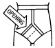
Hey kids! I've decided to take the lead of kottke and others, and become a full-time weblogger. That means I'll be accepting -- demanding, really -- payment for my blogging services. My initial thought was to offer "premium" subscriptions a la Salon, but I'm far too lazy and uneducated to set up something like that. Therefore, I'm introducing a new concept which I've dubbed microsurfing.
The way microsurfing works is, readers will be required to pay only for the amount of content they actually view. The more money you donate, the more content you can guiltlessly look at. Those who choose not to donate will be asked to avert their eyes. The tentative list of annual subscription fees for Trout Fishing in South-Central Wisconsin: Premium looks like this:
| $25: Full access to all weblog entries, including crude drawings of astronaut bears. $10: Read the first paragraph of entry, then avert eyes from rest of text. No charge for entries of one paragraph or less. $5: Browse entry titles only. Free: Glance quickly at page before moving on to BoingBoing. |
- - - Comments - - -
COMMENT:
AUTHOR: Jim
EMAIL: chaos@corrupt.net
IP: 24.12.9.132
URL: http://chaos.corrupt.net
DATE: 02/22/2005 10:48:05 PM
If I forward you these email stock tip offers that say they're worth thousands, can I read just the bolded text in your posts?
-----
COMMENT:
AUTHOR: B²
EMAIL: b@weirdsmobile.com
IP: 24.183.35.51
URL: http://www.weirdsmobile.com/b/
DATE: 02/22/2005 11:13:00 PM
No.
-----
COMMENT:
AUTHOR: Mandy
EMAIL: mandy@mandelion.com
IP: 68.89.130.178
URL: http://www.mandelion.com
DATE: 02/23/2005 02:19:03 AM
Damn, I love your blog but my disability check sucks ass. Hmm, do you have a payment plan for those of us who don't have very much cash? (now when the settlement comes in - no problem. but right now, i'm a broke bitch)
-----
COMMENT:
AUTHOR: B²
EMAIL: b@weirdsmobile.com
IP: 24.183.35.51
URL: http://www.weirdsmobile.com/b/
DATE: 02/23/2005 02:36:38 AM
Maybe in addition to the "premium" site, I'll offer a "budget" version, which will be identical to the regular version except more poorly written. And the Monday Mix Tape will be in MIDI format instead of MP3.
-----
COMMENT:
AUTHOR: Xkot
EMAIL: xkot@xkot.net
IP: 64.39.0.38
URL: http://xkot.livejournal.com
DATE: 02/23/2005 05:46:56 AM
You're my hero.
-----
COMMENT:
AUTHOR: j-a
EMAIL: jeonga_kim@yahoo.co.uk
IP: 24.193.121.227
URL: http://www.whatarewedoinghere.blogspot.com
DATE: 02/23/2005 07:39:04 AM
do we get discounts if we subscribe for two years?
-----
COMMENT:
AUTHOR: Scott
EMAIL: scott@duringflight.com
IP: 68.111.191.131
URL: http://duringflight.com/groundcontrol/
DATE: 02/23/2005 08:21:55 AM
What about a TFISCW tool/search bar for premium customers... with a button that says "go fish!"
I'd pay for that... and this site too.
The non-paying customers should get this kind of link: Strong Bad Site
And thanks for the post about my kleptones offering. Its very much apprecieated!
-----
COMMENT:
AUTHOR: groovebunny
EMAIL: wabbit@groovebunny.com
IP: 68.224.168.139
URL: http://www.groovebunny.com
DATE: 02/23/2005 10:34:28 AM
"Monday Mix Tape will be in MIDI format instead of MP3"
LMAO! midi format would be the evil of all evilness. You are a genuis! :)
-----
COMMENT:
AUTHOR: monkeyinabox
EMAIL: chris@monkeyinabox.net
IP: 72.0.160.193
URL: http://www.monkeyinabox.net
DATE: 02/23/2005 11:36:14 AM
How much to just read the punctuation?
-----
COMMENT:
AUTHOR: B²
EMAIL: b@weirdsmobile.com
IP: 24.183.35.51
URL: http://www.weirdsmobile.com/b/
DATE: 02/23/2005 11:48:30 AM
Most common forms of punctuation, like commas and periods, will of course remain free of charge to read. However, more complex punctuation, like certain semi-colon/em-dash combos, will require at least the "Trout Fishing Jr." level of membership in order to read.
-----
COMMENT:
AUTHOR: Susan
EMAIL: susanpatton@spamcop.net
IP: 66.188.146.189
URL: http://www.livejournal.com/users/tundrababe/
DATE: 02/26/2005 09:44:16 PM
Dude...you'd have to pay me to read Kottke. I can't believe that's for real!
New Hotness
02/22/2005 11:00:15 PM
The Kleptones have produced some truly awesome mash-up mixes, and Scott at groundcontrol is offering up their latest, From Detroit To The J.A., a sublimely smoove collision of hip-hop, Motown, and...Tears for Fears? It's like a crazy fever dream recap of 30 years of music.
If you want their earlier A Night At The Hip-Hopera album (hip hop meets Queen), download this BitTorrent file, or try this link.
Another Kleptones album, Yoshimi Battles The Hip-Hop Robots, can be found here.
Good Morning
02/23/2005 09:23:46 AM
It's been a pretty good morning so far. Woke up at a reasonable hour, went and walked the dogs, and both of them made poopies right away. That's really cool, when they do that, because when they do it at different times, then you have to pick up the poopies twice, but when they do it simultaneously, it's like picking up poopies only one time, even though it's two dogs' poopies. Only since it's two dogs, it's an extra-huge load of poopies in that one trip. So I guess it's a tradeoff. But they're little toy dogs anyway so it's not like if I had a St. Bernard, which I don't even want to think about.
[Premium content begins here. Non-Premium subscribers, please avert your eyes at this point.]
Ah, that's better. Now, where were we? Oh yes -- I hope you all have received your cigars and velvet smoking jackets. It certainly wouldn't be a Premium experience without the proper accoutrements. And since only the paying subscribers are reading this, I feel comfortable making a confession: my name is not actually Bryan, it's Maxwell, and I'm a 56-year-old Caucasian male living in Scottsdale, Arizona. Also, I was born with a 36 inch long prehensile tail, which I use to brush my teeth in the morning. Pretty shocking, huh? And to think that there are people reading this page for free who have no idea. Ha ha ha.
Damn, I should have done this ages ago. I don't know what I'm going to do once the money really starts pouring in. I guess the first thing I should do is hire somebody to walk my dogs and pick up their poopies. Yeah. And then I'll hire a dozen fashion models to follow me around everywhere and stand behind me, swaying arrhythmically as they scan the room with bored expressions. Sweet!
- - - Comments - - -
COMMENT:
AUTHOR: groovebunny
EMAIL: wabbit@groovebunny.com
IP: 68.224.168.139
URL: http://www.groovebunny.com
DATE: 02/23/2005 10:41:50 AM
So Maxwell...if that is indeed your real name...where exactly do we send our hard earned dough for the premium content? Cause I just read the whole thing and now I feel like a very bad girl for not having yet sent you my dollarages.
-----
COMMENT:
AUTHOR: dave
EMAIL: dcaolo@mac.com
IP: 65.96.48.172
URL: http://dave.typepad.com
DATE: 02/23/2005 11:11:20 AM
I read this entire post but I still have not received my Premium Membership Confirmation Email. Was that wrong? If ti will help, I can hit myself on the head with a board until I damage the part of my brain that's retaining the content of this post. Please advise.
-----
COMMENT:
AUTHOR: j-a
EMAIL: jeonga_kim@yahoo.co.uk
IP: 24.193.121.227
URL: http://www.whatarewedoinghere.blogspot.com
DATE: 02/24/2005 07:05:30 AM
sorry, but MAXWELL???
-----
COMMENT:
AUTHOR: L Man
EMAIL: littlemanclan@gmail.com
IP: 65.32.122.45
URL: http://littlemanclan.typepad.com/lmc/
DATE: 02/24/2005 01:16:08 PM
I want this posted as an audio file!
-----
COMMENT:
AUTHOR: BOB
EMAIL: bob@agirlnamedbob.com
IP: 172.172.196.223
URL: http://agirlnamedbob.com
DATE: 02/24/2005 10:40:29 PM
Who's Maxwell? If only I weren't so cheap!
-----
COMMENT:
AUTHOR: Ed
EMAIL: ed@edrants.com
IP: 64.81.242.197
URL: http://www.edrants.com
DATE: 02/27/2005 01:32:18 PM
Maxwell: I thought you declared bankruptcy two years ago.
-----
COMMENT:
AUTHOR: Smivey
EMAIL: smivey@yahoo.com
IP: 24.126.173.160
URL: http://smivey.blogspot.com
DATE: 03/16/2005 01:23:42 AM
I also have something 36 inches long that I brush my teeth with. It's my leg. My middle leg. Yeah, I was born with three legs. And an incredibly small penis.
No Tipping Allowed
02/23/2005 02:41:26 PM
Just in case there's any ambiguity on this point, let me make it clear that I'm just kidding about the "premium" thing. Content on TFISCW will always be completely and utterly free. Any pleas for donations you see here in the future will be purely in jest, as will any Google Ads, penis enlargement Flash banners, or malicious spyware popups.
- - - Comments - - -
COMMENT:
AUTHOR: jima
EMAIL: jima@legnog.com
IP: 207.7.7.214
URL: http://www.empty-handed.com/
DATE: 02/23/2005 03:29:49 PM
Whaaaa? You mean I've been sending you my credit card numbers and I'm STILL not gonna get any premium Buh² content?!
-----
COMMENT:
AUTHOR: B²
EMAIL: b@weirdsmobile.com
IP: 24.183.35.51
URL: http://www.weirdsmobile.com/b/
DATE: 02/23/2005 03:39:30 PM
I will never use credit card information sent to me for personal gain. Now if you'll excuse me, I have a plane to St. Barts to catch.
-----
COMMENT:
AUTHOR: Scott
EMAIL: scott@groundcontrol.com
IP: 146.244.137.70
URL: http://www.duringflight.com/groundcontrol
DATE: 02/23/2005 03:40:36 PM
If this is the case, then I want a refund for my "Quality B First-Time-Buyer Equity Mortgage Loan" and that "B 's Bald Spot-B-Gone" that I sent in for and never got!
I had to put up my '76 oldsmobile and my good running shoes for that stuff.
Could I at least keep the "B Egg-O-Matic?"
-----
COMMENT:
AUTHOR: B²
EMAIL: b@weirdsmobile.com
IP: 24.183.35.51
URL: http://www.weirdsmobile.com/b/
DATE: 02/23/2005 03:43:25 PM
Dang, I guess it's time to file for bankruptcy again!
-----
COMMENT:
AUTHOR: groovebunny
EMAIL: wabbit@groovebunny.com
IP: 209.246.244.1
URL: http://www.groovebunny.com
DATE: 02/24/2005 11:32:42 AM
What? No premiumness membership afterall? So I took out that second mortgage on my home for nothing?
And yup! Those penis enlargement banners are really handy to have flashing on my puter screen right as my boss walks into my office. lol
-----
COMMENT:
AUTHOR: snoopy
EMAIL: snappy@snoopy.org
IP: 68.114.238.99
URL:
DATE: 02/24/2005 01:24:41 PM
but money good, no money bad
-----
COMMENT:
AUTHOR: Amber
EMAIL: ambercastaway@yahoo.com
IP: 209.204.185.110
URL: http://accordingtoamber.blogspot.com
DATE: 02/24/2005 06:10:55 PM
You mean I've stayed away for the last couple of days, then finally mustered up courage to bop on over and see if you're napping or something so I can sneak in and read you for free and even, EVEN going as far as using my friend's IP address in case you were still here (Mwha-ha-ha! I'm so evil! EVIL! Let her get tagged for the charges! Not me! AHahahahaha!), only to find out I did all that for NOTHING?
Great, B...just great. wow. :-\
;-)
-----
COMMENT:
AUTHOR: BOB
EMAIL: bob@agirlnamedbob.com
IP: 172.172.196.223
URL: http://agirlnamedbob.com
DATE: 02/24/2005 11:30:18 PM
But more importantly, do you still take bribes?
-----
COMMENT:
AUTHOR: Joe
EMAIL: jigga_320@yahoo.com
IP: 12.39.231.240
URL: http://whatsinsidejoe.blogspot.com
DATE: 02/25/2005 04:48:08 PM
...but you'll still send me a velvet smoking jacket, right?
-----
COMMENT:
AUTHOR: Ellen
EMAIL: o1badone@aol.com
IP: 205.188.116.130
URL: http://anoddlittleplace.typepad.com/ellens_nest/
DATE: 02/27/2005 05:05:33 PM
Wow, I've been averting my eyes for the premium versions because I didn't pay for them. Does that mean I can go back and read the premium posts now?
All the cats say meow, meow, meow, meow.
03/03/2005 10:29:07 AM
Please to enjoy the fuzzy lo-fi rock stylings of up-and-coming UK band Black Ramps. You can listen to their debut EP, Shark Attack, on the front page of the site.
(Thanks to Big Dog Josh for the link.)
Here Comes The Sun
03/07/2005 10:21:33 AM
Stream 'em!
• • •
1. Nick Cave, "Here Comes The Sun"
2. Laura Watling, "We're Still Fun"
3. Eva Cassidy, "Kathy's Song"
4. Travis, "Writing To Reach You"
5. Rose Melberg, "I Love How You Love Me"
6. Willie K, "You Ku'uipo"
7. Innocence Mission, "You Are The Light"
8. The Guild League, "Balham Rise"
9. Grandaddy, "Lava Kiss"
10. Willard Grant Conspiracy, "Beautiful Song"
- - - Comments - - -
COMMENT:
AUTHOR: hannah
EMAIL: misshannah@livejournal.com
IP: 128.104.27.51
URL:
DATE: 03/07/2005 12:30:39 PM
A really lovely mix today!
-----
COMMENT:
AUTHOR: Scott
EMAIL: scott@duringflight.com
IP: 146.244.138.213
URL: http://www.duringflight.com/groundcontrol
DATE: 03/07/2005 03:48:35 PM
nice mix! Travis is a favorite of mine...
Hey B, Have you seen this in the news? I figured that you might have heard of it up there in Wisconsin: http://www.wbay.com/Global/story.asp?S=3037721
-----
COMMENT:
AUTHOR: Carrie
EMAIL: cdmarcone@gmail.com
IP: 68.46.240.142
URL: http://renton.uams.edu/whatever
DATE: 03/09/2005 09:33:48 AM
Very nice mix!
I look forward to your mix every week.
-----
COMMENT:
AUTHOR: a35mmlife
EMAIL: a35mmlife@earthlink.net
IP: 24.126.125.103
URL:
DATE: 03/09/2005 01:13:37 PM
Indeed! An excellent mix today... as always...
Story
03/11/2005 02:37:21 AM
This Week:
THE GUY WHO KILLED HIS WIFE AND
TOTALLY TRIED TO GET AWAY WITH IT
Flaherty had just murdered his wife for her insurance money. Panicking, he fled the scene, barely stopping even to dump the kitchen knife into a dumpster on the way back to the downtown apartment he shared with his mistress, Bette (pronounced "Bett-y," not "Bet," by the way).
Bette wasn't home when Flaherty got back. He poured himself a drink and slumped down on the couch, the nervous energy draining from his body, which was fat. He started to reach for the TV remote, maybe to catch the football game, or some other type of televised athletic event, but stopped himself. Right now he needed peace and quiet, to calm his frayed nerves.
But it wasn't quiet in the room. Flaherty could hear a faint sound, like a heartbeat, coming from everywhere and nowhere. "Oh my God," Flaherty thought, "could that be the ghostly beating of my wife's heart, which I stabbed through with my incredibly sharp Wusthof, or no, Kyocera ceramic chef's knife? For the love of God!"
It was really just Flaherty's imagination, though. Later, he was apprehended for the murder and sentenced to life in prison.
THE END....?
(Actually, yes, the end.)
- - - Comments - - -
COMMENT:
AUTHOR: Mary
EMAIL: marymary@rantorama.com
IP: 24.8.7.194
URL:
DATE: 03/11/2005 07:12:48 AM
But what of the insurance money? I hope Bette didn't get it. Anyone who spells her name like that, yet forces people to call her "BettY", doesn't deserve to get rich off the slaughtered corpse of her married lover! ;)
-----
COMMENT:
AUTHOR: Sherri
EMAIL: Sylkenvelet@yahoo.com
IP: 68.59.165.165
URL: http://www.formyselfandstrangers.blogspot.com
DATE: 03/11/2005 08:35:50 AM
I'm reading a book called "20 Master Plots". This ain't one of 'em. ;>
(The book is good, though)
-----
COMMENT:
AUTHOR: Scott
EMAIL: scott@duringflight.com
IP: 68.111.191.131
URL: http://www.duringflight.com/groundcontrol
DATE: 03/11/2005 10:45:24 AM
It's easy to see that Flaherty was a disturbed individual. Anyone that tries to watch sports to calm down is missing a few cards.
-----
COMMENT:
AUTHOR: Jim
EMAIL: chaos@corrupt.net
IP: 63.167.178.72
URL: http://chaos.corrupt.net/
DATE: 03/11/2005 12:31:33 PM
Haha - "So?" indeed!
-----
COMMENT:
AUTHOR: j-a
EMAIL: jeonga_kim@yahoo.co.uk
IP: 12.6.58.136
URL: http://www.whatarewedoinghere.blogspot.com
DATE: 03/14/2005 12:36:52 PM
um. ok. that is still better than some pieces i have to read in my creative writing class.
-----
COMMENT:
AUTHOR: Collin
EMAIL: collin@fizzleandpop.com
IP: 67.41.75.54
URL: http://fizzleandpop.com
DATE: 03/15/2005 12:55:13 PM
So. Where was Bette during all of this?
Poodlecise!
03/11/2005 01:30:29 PM
Courtesy of Xkot:
THE SINGLE MOST DISTURBING VIDEO YOU WILL EVER SEE IN YOUR ENTIRE LIFE, EVER.
(Reasonably safe for work, not at all safe for your future ability to sleep at night.)
- - - Comments - - -
COMMENT:
AUTHOR: Mary
EMAIL: marymary@rantorama.com
IP: 24.8.7.194
URL:
DATE: 03/11/2005 06:00:54 PM
What in holy hell did I just watch????!!! Should I call a shrink, or PETA?
-----
COMMENT:
AUTHOR: Scott
EMAIL: scott@groundcontrol.com
IP: 68.111.191.131
URL: http://duringflight.com/groundcontrol/
DATE: 03/11/2005 11:49:34 PM
This is the scariest thing I have ever seen. I have to spray my eyes with windex now....
-----
COMMENT:
AUTHOR: Scott
EMAIL: scott@groundcontrol.com
IP: 68.111.191.131
URL: http://duringflight.com/groundcontrol/
DATE: 03/12/2005 12:43:02 AM
Hey, B:
I just found this great mashup of an Anti-Bush Album: Bushwhacked. Worth a look while its up... Lots-o-tunes. Propoganda. Fun!
-Scott
-----
COMMENT:
AUTHOR: Sandra
EMAIL: me@me.com
IP: 24.183.35.51
URL: http://n/a
DATE: 03/13/2005 03:46:36 PM
This is some sort of parody/spoof of Susan Powter. The little walking icon at the beginning is part of her logo, and the "be well" at the end of it is what she used to say. Kind of a tepid spoof, but very disturbing otherwise!
-----
COMMENT:
AUTHOR: Carrie
EMAIL: cdmarcone@gmail.com
IP: 68.46.240.142
URL: http://renton.uams.edu/whatever
DATE: 03/14/2005 09:44:02 AM
What was that? I'm truly frightened.
-----
COMMENT:
AUTHOR: groovebunny
EMAIL: wabbit@groovebunny.com
IP: 209.246.244.1
URL: http://www.groovebunny.com
DATE: 03/14/2005 11:50:40 AM
Yikes!!!
-----
COMMENT:
AUTHOR: j-a
EMAIL: jeonga_kim@yahoo.co.uk
IP: 12.6.58.136
URL: http://www.whatarewedoinghere.blogspot.com
DATE: 03/14/2005 12:35:42 PM
i can't believe what i just saw. did i just see a woman with poodle arms/legs exercising with poodles? what is going on? is it my pepto bismol?
-----
COMMENT:
AUTHOR: Malboeuf
EMAIL: malboeuf@mcleodusa.net
IP: 12.43.87.45
URL:
DATE: 03/14/2005 03:07:31 PM
Another episode in human existence that supports the notion that everyone, yes EVERYONE, should receive a prescription for anti-psychotic drugs as soon as they're weaned from their mother's milk (where they are sharing her anti-psychotic drugs).
-----
COMMENT:
AUTHOR: Smivey
EMAIL: smivey@yahoo.com
IP: 24.126.173.160
URL: http://smivey.blogspot.com
DATE: 03/16/2005 01:16:29 AM
I don't understand what the big deal is. Not only have I seen this video before, I own the entire set. This video has changed my life. And my poodle's.
-----
COMMENT:
AUTHOR: Lee
EMAIL: leeman@gmail.com
IP: 66.77.213.149
URL: http://blog.walinchus.net
DATE: 03/17/2005 09:35:57 PM
I will never be able to look at a poodle without thinking, "ok four more...now three and two and one...good..relax".
So. Very. Wrong.
Unmixed
03/14/2005 08:06:27 PM
There won't be a Monday Mix Tape this week, because I'm currently at the very beginning of a major mp3 organization project on my hard drive, and instead of dipping into my "organized" pile and uploading more stuff by bands I've featured many times before, I'd rather present some "new" stuff that I -- and quite possibly you -- haven't heard yet. Just so's ya know.
Les Rapides des Péres
03/15/2005 07:44:37 AM
Woooooooo!! De Pere, baby! I'm goin' to De Pere!!!
De Pere.
[3:51 p.m.] Post-De Pere Update:
De Pere.
- - - Comments - - -
COMMENT:
AUTHOR: filmgoerjuan
EMAIL: fgjuan@telus.net
IP: 207.81.159.182
URL: http://blog.filmgoerjuan.com
DATE: 03/15/2005 12:47:43 PM
Made famous by the Saturday Night Live sketch where those Mike Ditka looking football fans sat around say "Da Peres"
Enjoy!
-----
COMMENT:
AUTHOR: Scott
EMAIL: scott@duringflight.com
IP: 146.244.137.192
URL:
DATE: 03/15/2005 05:05:10 PM
Just for fun, I looked up the website for De Pere because I had no idea if it was a real town (it is) and I thought it was a little odd that under the "FUN" catagory it listed public pay phones. (Go see for yourself)
What does this mean? Do locals like to call pay phones for fun?
Interesting....
-----
COMMENT:
AUTHOR: j-a
EMAIL: jeonga_kim@yahoo.co.uk
IP: 24.168.159.137
URL: http://www.whatarewedoinghere.blogspot.com
DATE: 03/16/2005 01:22:36 PM
never heard of it before, but i can verify scott's comment about the payphones being listed under the 'fun' section.
-----
COMMENT:
AUTHOR: Carrie
EMAIL: cdmarcone@gmail.com
IP: 68.46.240.142
URL: http://renton.uams.edu/whatever
DATE: 03/16/2005 08:43:45 PM
I too am trying to decipher how exactly payphones fit in the "fun" category. Maybe there are things going on inside those booths that we'd rather not know about. Do payphone booths even exist anymore?
-----
COMMENT:
AUTHOR: groovebunny
EMAIL: wabbit@groovebunny.com
IP: 68.224.168.139
URL: http://www.groovebunny.com
DATE: 03/17/2005 01:59:25 AM
I didn't know it was a real place either! lol Have a great time. :)
-----
COMMENT:
AUTHOR: Carl Sagan
EMAIL: csagan@deadastronomer.com
IP: 165.121.32.252
URL:
DATE: 03/17/2005 09:03:43 PM
FYI - the protagonist portrayed by Ms. Jodi Foster in the film adaptation of my work Contact was from DePere.
Gotta go now - back to my wormhole - oh yeah, the future, I wouldn't even bother worrying about it.
Fun Neatness
03/18/2005 01:22:11 AM
Hey kids! If you're using Firefox (and you really should be) and want an easy way to download all the mp3s in the Monday Mix Tape in one fell swoop, try out the Down Them All extension. It takes all the downloadable items from a page and puts them in a list, and you can select the ones you want and download up to nine at a time. Fun.
- - - Comments - - -
COMMENT:
AUTHOR: Kate
EMAIL: kate@katemonkey.co.uk
IP: 62.254.0.57
URL: http://www.katemonkey.co.uk/
DATE: 03/18/2005 02:07:46 AM
I adore Firefox. Alas, I can't use it at home. Stupid OS9! Why must you be so backwards!
-----
COMMENT:
AUTHOR: B²
EMAIL: b@weirdsmobile.com
IP: 24.183.35.51
URL: http://www.weirdsmobile.com/b/
DATE: 03/18/2005 02:11:55 AM
I'm ashamed that for a second I was like, "What? OS9? What was that?"
-----
COMMENT:
AUTHOR: ry
EMAIL: ry@email.com
IP: 204.52.215.93
URL:
DATE: 03/18/2005 08:36:43 AM
And of course you won't give us a link to the extension. And yes, you do have to do everything around here.
-----
COMMENT:
AUTHOR: B²
EMAIL: b@weirdsmobile.com
IP: 24.183.35.51
URL: http://www.weirdsmobile.com/b/
DATE: 03/18/2005 08:45:19 AM
But I did give you the link -- check out the Down Them All text, it's a hyperlink. Focus, people, focus!
-----
COMMENT:
AUTHOR: jennifer and the beans
EMAIL: beanmom@beanmom.com
IP: 69.141.20.124
URL: http://www.kjsl.com/~beanmom/beandiary.html
DATE: 03/18/2005 12:32:11 PM
Ooooooo!! That is SO COOL.
All Fired Up
03/18/2005 09:50:50 AM
I've been kind of hopping back and forth between Safari and Firefox for my browsing needs, but lately I've been sticking more and more with Firefox, mostly because of the cool extensions. Adblock alone makes switching worthwhile. So, here are my Five Favorite Firefox Extensions:
1. Adblock
Firefox has a built-in image blocking tool, but Adblock does so much more. Instead of just blanking out images, it can prevent them from being loaded in the first place. It'll block Flash ads, which the built-in tool doesn't do, and you can set Adblock up to block, say, anything from an address containing the word "adserver." It'll also block iframes and scripts. It's fascinating to pull up the Adblock list of blockable elements and see just how much crap some sites throw at you. And, I'll admit it, it's perversely thrilling to be able to block every ad on a site, and also the stupid iframe it comes in, so it often doesn't even look like anything was ever there.
2. BugMeNot
Everyone has this installed, right? If not, you should. BugMeNot allows you to bypass web registration on sites that require it, like online newspapers (NY Times, etc.) Once installed, you can just right-click in the registration field on the offending site, and BugMeNot fills in a username/password combination, if available. Neat, and another extension that allows you to thwart the intentions of evil, evil webmasters. Ha ha ha.
You know the TinyURL service, that lets you take a superhuge web address (like your typical Amazon link) and reduce it to a little URL like http://tinyurl.com/6? This extension lets you do that right from Firefox, either by right-clicking a link, or through the Tools menu. Neat.
4. AutoCopy
Whatever you highlight on the page is automatically copied to your clipboard. Pretty simple, but a great timesaver.
5. FoxyTunes
This neat little extension puts controls for your favorite music player right into the status (or navigation) bar of your browser. Supports a crapload of players, including iTunes, Windows Media Player, WinAmp, etc.
(Be sure to read the info pages for these extensions to see how to use them, because it's not always obvious. Oh, and this is the first entry I've posted using Ecto, the nifty Windows/Mac blogging client. I hope it doesn't suck.)
- - - Comments - - -
COMMENT:
AUTHOR: jennifer and the beans
EMAIL: beanmom@beanmom.com
IP: 69.141.20.124
URL: http://www.kjsl.com/~beanmom/beandiary.html
DATE: 03/18/2005 12:30:49 PM
Wait, don't tell me that Abe Vigoda Status 1.1 didn't make your top 5!!
http://tinyurl.com/6yaxa
-----
COMMENT:
AUTHOR: B²
EMAIL: b@weirdsmobile.com
IP: 24.183.35.51
URL: http://www.weirdsmobile.com/b/
DATE: 03/18/2005 01:35:36 PM
You know what, I thought about installing Abe Vigoda Status 1.1, and then I thought, no, someday Abe is gonna die, and I don't want that flashing on my status bar while I'm watching a Strong Bad Email or something!
-----
COMMENT:
AUTHOR: a35mmlife
EMAIL: a35mmlife@hotmail.com
IP: 24.126.125.103
URL:
DATE: 03/18/2005 03:01:18 PM
There are two more i use...
1.) the bloglines toolkit is rad. a right click function that instantly lets you add the rss feed of a page to your bloglines.com account... very useful.
2.)Downloadthemall is the music downloaders friend. It allows you to download by clicking a box next to every url link on a page... huge timesaver... HUGE!
-----
COMMENT:
AUTHOR: Jim
EMAIL: chaos@corrupt.net
IP: 63.167.178.72
URL: http://chaos.corrupt.net/
DATE: 03/18/2005 03:20:18 PM
Hmm. FoxyTunes is intriguing. I didn't think any sort of automation was possible with iTunes for Windows. If this is how FoxyTunes is working, this opens up a lot of possibilities.
I didn't know about the BugMeNot extension, either. Thanks!
-----
COMMENT:
AUTHOR: Scott
EMAIL: scottdonaldson@gmail.com
IP: 146.244.114.131
URL: http://www.duringflight.com/groundcontrol
DATE: 03/18/2005 03:43:10 PM
You know, I honestly need to learn about RSS feeds and how they work. Is there anything that explains this in an easy-to-understand way?
-And thanks for the plug-in links... but how does the "download them all" extension work?
Maybe its the hangover, but I am lost on that one.
-----
COMMENT:
AUTHOR: Susan
EMAIL: susanpatton@spamcop.net
IP: 68.112.157.192
URL: http://www.livejournal.com/users/tundrababe/
DATE: 03/18/2005 10:55:02 PM
Abe Vigoda status is hilarous!
I downloaded the BugMeNot extension...that is so damn awesome. I got AdBlock too, but haven't seen the results yet.
That AutoCopy one would be bad for me...I have this habit of constantly highlighting text just for the hell of it. Gives me a way to expend energy, I guess. Not such a good habit with a cordless mouse that runs on batteries.
-----
COMMENT:
AUTHOR: maikopunk
EMAIL: kidxine@hotmail.com
IP: 24.69.255.245
URL: http://maikopunk.blogspot.com
DATE: 03/19/2005 01:17:24 AM
Knowing the status of Mr Vigoda at all times is tempting, but if I really need a fix there's always The Godfather.
-----
COMMENT:
AUTHOR: Mary
EMAIL: marymary@rantorama.com
IP: 24.8.7.194
URL:
DATE: 03/19/2005 09:13:27 AM
I love my firefox, and am still learning about extensions and stuff. Thanks for the links!
-----
COMMENT:
AUTHOR: groovebunny
EMAIL: wabit@groovebunny.com
IP: 209.246.244.1
URL: http://www.groovebunny.com
DATE: 03/21/2005 12:28:29 PM
How I love Firefox and Adblock. Haha I'd love to get the Vigoda status bar. Isn't that sick?
Belle & Sebastian, "Your Cover's Blown"
- - - Comments - - -
COMMENT:
AUTHOR: L Man
EMAIL: littlemanclan@gmail.com
IP: 65.32.122.45
URL: http://littlemanclan.typepad.com/
DATE: 03/18/2005 06:38:23 PM
Great tune, B!
-----
COMMENT:
AUTHOR: moesmum
EMAIL: moesmum@bellsouth.net
IP: 65.7.159.26
URL: http://www.livejournal.com/users/moesmum/
DATE: 03/19/2005 06:51:54 AM
Wheeee!
-----
COMMENT:
AUTHOR: josh
EMAIL: josh.beach@gmail.com
IP: 80.176.148.180
URL: http://www.bigdogjosh.co.uk
DATE: 03/21/2005 12:15:21 PM
Great track. Very different from there usual stuff.
Clone Wars!
03/21/2005 04:29:55 PM
Attention early adopters and/or fellow anti-cable-TV freaks: here are two BitTorrent files for two brand new episodes of Cartoon Network's Clone Wars series, airing tonight and tomorrow.
Episode 21
Episode 22
I'm still downloading the episodes myself, so I can't vouch for quality, etc. For all I know, they might actually be poodle aerobics videos.
- - - Comments - - -
COMMENT:
AUTHOR: ed
EMAIL: ed@edrants.com
IP: 64.81.242.197
URL: http://www.edrants.com
DATE: 03/21/2005 11:19:51 PM
Clone Wars? Bah. Doctor Who leaked to the Internet? That's what I'm talking about.
-----
COMMENT:
AUTHOR: B²
EMAIL: b@weirdsmobile.com
IP: 24.183.35.51
URL: http://www.weirdsmobile.com/b/
DATE: 03/21/2005 11:48:01 PM
Y'know, I've never been a Doctor Who fan. I've tried, but I just can't get into it. I think it's just a little too whimsical, or British, or something. So, Trout Fishing shall remain a Who-free zone. Ah well.
Maria Taylor, "Song Beneath The Song"
From the upcoming solo album by the Azure Ray singer. Recorded off of NPR's All Songs Considered using WireTap.
- - - Comments - - -
COMMENT:
AUTHOR: hannah
EMAIL: misshannah@livejournal.com
IP: 128.104.27.51
URL:
DATE: 03/22/2005 01:04:26 PM
thanks!
-----
COMMENT:
AUTHOR: Jim
EMAIL: chaos@corrupt.net
IP: 63.167.178.72
URL: http://chaos.corrupt.net/
DATE: 03/22/2005 01:51:11 PM
Yes, thanks. She seems to know how to use synths in a natural way.
Video
03/23/2005 08:55:37 AM
Don't miss the Decemberists video for "16 Military Wives," available on their site via BitTorrent.
- - - Comments - - -
Gone Fishin'
03/23/2005 03:15:53 PM
I'm taking a hiatus from weblog-related activities for a while, in order to focus on some projects I really need to work on. I've been trying to juggle all of it, but it's not working (as some of the boring-ass entries on this weblog have demonstrated). I think one-thing-at-a-time is the best way to go.
This is pretty much of a total World Wide Web fast. So, if anyone whose weblog I read regularly dies abruptly between now and when I come back, if they could e-mail me and let me know, that would be great. Thanks.
In lieu of weblogging, I'm going to try out a new email-only feature, which I like to call B's Super Secret Illicit File Sharing Mailing List and Stuff. This will be a weekly (or so) email announcement of the latest Monday Mix Tape links, other super special, copyright-flouting goodies, and anything else I can think of. If you're interested, enter your name and email address in the form below.
Risible
05/06/2005 12:21:00 AM
Via Moesmum, I found this high-larious illustrated guide to emigrating from Mexico, including all methods legal and less-legal, put out by the Mexican foreign ministry:
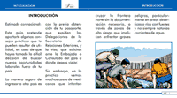 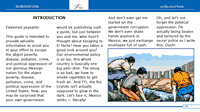
For those not fluent in the Spanish language, I've provided this helpful translation:
Various Webloggy Topics
05/07/2005 02:29:08 AM
1. Due to bandwidth issues, I'm going to have to close B's Super Secret Illicit File Sharing Club & Stuff to new subscriptions, at least for the near future.
That's it for the newsworthy stuff...the rest of the (boring) items below the fold....
2. I also took most, if not all, of the mp3 links, Songs of the Day, and Monday Mix Tapes off the site. I was getting too many Google searches for that stuff, and I started to sort of feel bad about luring people to the site with juicy links to files that no longer exist on the server. They're still there, but not online anymore. I'm 99.999% sure that I won't need to drag those out of cold storage for any reason, but on the off chance that I do, they're there.
One weird (to me) consequence of taking that stuff off the site is that Trout Fishing doesn't look like a music blog anymore. Which amuses me because I've been so pigeonholed that way, to the extent that I'm getting those emails from indie bands to check out their new stuff, which never ever happened before the music-blog thing started.
3. I also removed my blogroll (that is, my blogroll for other webloggers). Lauren at Feministe had an interesting discussion on the subject, and I was convinced. Not only had my blogroll grown into an ungainly monster, but Lauren's entry made me realize that I tend to rely on that blogroll as a way to point readers to interesting weblogs, rather than taking the time to discuss them in actual entries. And if that's what I'm doing, I'm doing a piss poor job, because I can't imagine anyone responding to that behemoth with anything but glazing eyes. So, I thought it'd be an interesting experiment to take it off, and make more of an effort to point to other weblogs, and see if that works out. We shall see.
- - - Comments - - -
COMMENT:
AUTHOR: Mandy
EMAIL: mandy@mandelion.com
IP: 69.148.172.189
URL: http://www.mandelion.com
DATE: 05/07/2005 03:10:44 AM
Glad to see a post. I was wondering what happened, as I love the blog. Mine is offline for a few more weeks for tweaking but I love to keep up with everyone else.
:)
-----
COMMENT:
AUTHOR: Sherri
EMAIL: Sylkenvelvet@yahoo.com
IP: 68.59.165.165
URL: http://www.formyselfandothers.blogspot.com
DATE: 05/07/2005 05:27:52 PM
Nope. keeping the blogroll. I can discuss interesting blog posts and still have a nifty gizmo that says when someone has posted something new. Especially with slow/rare posting blogs, that little arrow on my roll reminds me that "Oh yeah, he/she is still alive!" Too handy.
-----
COMMENT:
AUTHOR: Sherri
EMAIL: Sylkenvelvet@yahoo.com
IP: 68.59.165.165
URL: http://www.formyselfandothers.blogspot.com
DATE: 05/07/2005 05:57:51 PM
B, I went an read what she had to say, and found myself shaking my head and rolling my eyes. At least for me personally, the loss of your blogroll is a significant loss, because you often found sites I would never discover. I used it as a tool to keep up with sites that occasionally intrigued me but didn't regularly involve me. I used it to find new things that you'd run across. The blogroll is not at fault -- it is the use of the blogroll. Have we once again gone back in time to where removing a link is tantamount to declaring war?
I'm irked and irritated. She has some very good thoughts, but I can't get passed the blaming of the tool over grasping the use of the tool, and the inevitable and ultimately unstoppable forces of human nature that create such tools. Now I've lost access to much of what you have seen and known.
-----
COMMENT:
AUTHOR: B²
EMAIL: b@weirdsmobile.com
IP: 24.183.35.51
URL: http://www.weirdsmobile.com/b/
DATE: 05/09/2005 02:39:10 AM
Hey, what are you guys doing here? Nobody's supposed to be reading this weblog anymore, since I've gone on hiatus. Yeesh!
Sherri, you make excellent points as always. I won't pretend that my decision about my blogroll was as well thought-out as those of other webloggers. Mainly because I just don't consider this a topic worthy of that much attention. If there's a list of Issues Desperately in Need of Attention in 2005, this topic isn't even on the same planet as that list.
If you exclude the political part of this issue (which I do), this is clearly not an and/or, blogroll OR individual entry links issue. It is of course possible to link to interesting blogs and still have a links list on the same page. So, personally, and in regard only to my own weblog, I see it as a kind of exercise, to see if not having that handy list will encourage me to take more public notice of weblogs that I find interesting and notable. Lauren's entry, and the ones she linked to, made me realize how often I'll read something cool or thought-provoking on someone's weblog, but never mention it on my own.
To be honest, I've always sort of disliked the links-list concept, or at least what it's turned into. I hate the social obligation aspect of it, the way a freaking hyperlink can turn into the object of anger and resentment. If there's a different model for acknowledging fellow webloggers, I'm all for trying it out. I can totally see, too, the argument that blogrolls are for many readers a valuable launch point for discovering new weblogs. But even in that capacity I dislike the blogroll (or at least, my own vanilla, basic implementation of it), because that monolithic slab of links doesn't say much about what kind of content lies behind the link, or why I added it there (cool site, or obligatory reciprocation) and it gets so I start to dread seeing that list every time I load up my own site. I tried categorizing the links, but that just ends up pigeonholing the most interesting, eclectic weblogs. (I was sort of proud of my link-map from a few years ago, which presented the links graphically based on how personal/general their subjects were, etc., but even that is too broad in my opinion.)
So, it may well be that nixing my blogroll is a dumb idea. I think there's a counter-argument to be made, and I don't know if anyone's made it yet, that blogrolling gives more control to the reader (you choose which sites you want to visit) and that confining external linkage to blog entries is really just a way of exerting more power over information flow. It just seems like replacing one form of elitism with another, if you look at it that way. But who knows. At any rate, I think it's worth giving a shot to this way of doing it, and if it doesn't do what I hope it does, then back to the tried-n-true.
-----
COMMENT:
AUTHOR: B²
EMAIL: b@weirdsmobile.com
IP: 24.183.35.51
URL: http://www.weirdsmobile.com/b/
DATE: 05/09/2005 02:47:32 AM
P.S.
Just for a bit of perspective, I have never aspired to be BoingBoing.net or Slashdot. I've had weblogs that were more popular and less popular, and I've had much more fun with a small, friendly, and most importantly, forgiving, community of readers. So, Trout Fishing is by design a small blog, and I can't imagine that any link I gave to anyone, blogroll or non-blogroll, would make much of a dent in their stats. So, for me it's just not that huge of an issue.
-----
COMMENT:
AUTHOR: Marissa
EMAIL: riss@feelingismutual.com
IP: 216.116.241.151
URL: http://www.feelingismutual.com/blog.php
DATE: 05/09/2005 08:52:40 AM
You know I still check your site about twice a day in my special OCD way...just in case. And on days when it's really tough and I can't get out of bed in the morning knowing that you won't be on the web, I read and reread your paper on sherman alexie that you sent me so many years ago (none of this sentence is true...I'm clarifying because it sounds a little creepy). A question though...I subscribed to the illicit club and I've never received an email. Have I just publically admitted to being snubbed?
-----
COMMENT:
AUTHOR: hannah
EMAIL: misshannah@livejournal.com
IP: 128.104.27.51
URL:
DATE: 05/09/2005 08:59:04 AM
It's only recently that I've even used the list of websites on a particular blog to explore new sites. So, while I feel pretty late to the discussion, I can say I've found them helpful, lately. I'm mostly looking for "here's a site that's like mine, but is not me."
-----
COMMENT:
AUTHOR: Sherri
EMAIL: Sylkenvelvet@yahoo.com
IP: 68.59.165.165
URL: http://www.formyselfandothers.blogspot.com
DATE: 05/09/2005 09:05:07 AM
B, I don't mean to devalue your decision. I know you are constantly trying to spur yourself on to do all the things you think you should do. Oh yes, I remember well the great gnashing of teeth caused by linky-love and lack thereof. Maybe turning 40 has gifted me with a huge load of "I don't give a fuck" because (having just culled my blogroll this morning) I reserve the right to link what I like, and I never ever ask or expect anyone to link to me. Popularity, to me, means as much restraint as freedom, perhaps more confines since so many people will have an opinion on what I say.
I keep checking here because, honestly, I enjoy talking with you and it's about the only way to do it, you hermit.
Inertia
is a terribly force sometimes (especially that "objects not in motion" part) and I just don't see a point in removing anything that helps you do something when it's so hard to do anything. *sigh* Besides, if you make a direct commentary, someone you comment upon (unless you plan all sunshine and love) will snipe at you and you will not like it and be hurt, which make me mad at people who snipe.
In fact, if you want to get a nasty hate post on a weblog out just 'cause, I offer mine up for sacrifice. Should be easy enough ;> That way everyone knows what to expect and maybe you'll be protected from sniping. Besides, I culled "bryanbyun.com" off my roll because...well...you killed it and that's no fun. But you can be mad about it if you want, well...just 'cause!
-----
COMMENT:
AUTHOR: B²
EMAIL: b@weirdsmobile.com
IP: 24.183.35.51
URL: http://www.weirdsmobile.com/b/
DATE: 05/09/2005 09:35:44 AM
Marissa: Ah, nothing like a bit of fake fandom to pseudo-stroke a weblogger's ego! BTW, I'm not sure what happened with the Super Secret subscription, but it's possible the confirmation got spam-filtered. I re-subscribed you, so you should have another confirmation on the way...to your spam filter?
Hannah: So, do you think a better solution would be more descriptive blogrolls? Blogrolling offers that option via "title" tag notes on the links, but I've usually been too lazy to actually use that function.
Sherri: Sunshine and love -- sounds good to me. I can't recall that I've ever linked to someone in a derogatory entry (in private, though...). Seems too much like public humiliation in a medium where it's hard enough to get up the gumption to speak your mind. Mainly I just like the idea of calling attention to things I find interesting -- isn't that what weblogs are supposed to be for?
-----
COMMENT:
AUTHOR: Scott D
EMAIL: scottdonaldson@gmail.com
IP: 208.27.203.131
URL: http://www.duringflight.com/groundcontrol/
DATE: 05/09/2005 10:37:14 AM
I know this is a tad late in the conversation, but you could have a handful of themed links that open a mini-window of blog links related to that theme. For example, if you had a link for 'movie blogs' a window of blogrolls related to that would appear.
Or, you could use a RSS feed (aggrigator thingy) to filter or seperate what you would like to relate to on your blog. I guess I'm not too sure what you wish to accomplish in lieu of a blogroll link-list, but personally... what makes it hard when blogrolls get as large as yours is to find a connection or identification with so many links. I have a few that I look at for updates and bypass the rest unless I have a touch of curiosity. :)
P.S. Your site was down yesterday.
-----
COMMENT:
AUTHOR: Jim
EMAIL: chaos@corrupt.net
IP: 63.167.178.72
URL: http://chaos.corrupt.net/
DATE: 05/09/2005 11:56:18 AM
Hey, just wanted to mention for people that are checking this or other infrequently updated weblogs every day - if you subscribe to it with an RSS reader like Bloglines, it will check for you and tell you when there's an update. No need to manually check every day!
-----
COMMENT:
AUTHOR: Sherri
EMAIL: Sylkenvelvet@yahoo.com
IP: 68.59.165.165
URL: http://www.formyselfandothers.blogspot.com
DATE: 05/09/2005 12:49:11 PM
I tried the RSS feed thing for a while, but for reasons that may have more to do with how my brain is wired than with the software itself, I didn't get quite what I wanted. In part I felt a little...harrassed? I check my own site to read comments and enjoy the wonders of my sitemeter referal links (ah, the referal links!)
B-man, I think you have hit upon the soul of the problem...a weblog is, indeed, a place to draw attention to things that interest you, whether that interest is angry, bored, happy, demented...whatever, that's what it is for.
When did we start looking to "authorities" to tell us what our weblogs are supposed to "be for"? Why is it because some weblogs are "for" one thing, all weblogs have to be "for" that?
-----
COMMENT:
AUTHOR: Sherri
EMAIL: Sylkenvelvet@yahoo.com
IP: 68.59.165.165
URL: http://www.formyselfandothers.blogspot.com
DATE: 05/09/2005 01:12:24 PM
damn it all, you made me think again! Go check my site for the thing you made me think of, since I fully expect you to be among the first to do something with it and spread it around like the viral infection it most resembles.
-----
COMMENT:
AUTHOR: hannah
EMAIL: misshannah@livejournal.com
IP: 128.104.27.51
URL:
DATE: 05/09/2005 01:58:39 PM
B-I guess I like a combo of descriptive blogrolls and Scott's idea. (Which is really good, by the way!) If you combined the "indexing" of posts with a list of links (things you actually read) attached to the index topic, that might prove to be extremely helpful! I think the point is: what is the point of the list?? As a reader, the only thing I want it for is to see what the blogger I'm reading is interested in. If the list is full of reciprocal/vanity links and the blogger doesn't actually read the site s/he has linked in the roll, what the huh is it good for???
-----
COMMENT:
AUTHOR: groovebunny
EMAIL: wabbit@groovebunny.com
IP: 68.224.168.139
URL: http://www.groovebunny.com
DATE: 05/09/2005 10:23:53 PM
Okay sneaking out of hiatus here to read some B! :) As for the blogroll, I mainly use mine to see when folks have updated, and use others to check out other blogs I wouldn't have found otherwise. For instance I found Sherri on your roll, and Hi I'm Black, and Enigma (who is gone! *sniff*). But I really think having a blogroll up is up to the owner of the site. There are a few blogs I know of as well who keep their rolls hidden. Okay...that's it for now. Now I'll read everyone's comments since I'm all nosey and such. :)
-----
COMMENT:
AUTHOR: groovebunny
EMAIL: wabbit@groovebunny.com
IP: 68.224.168.139
URL: http://www.groovebunny.com
DATE: 05/09/2005 11:19:03 PM
Holy smacks what a great discussion going on here. Okay I use RSS feeds and blogrolling to get my daily fixes on reads. And sites that do the blog roll and RSS I have marked on both just incase the writer forgets to ping blogroll. I know my blogroll has become a bit huge, but everyone on my list are there because I know when I am able to visit there will always be something that I can take away with me and think about later. I don't always comment because I don't want to look like I stalk any of ya'll. lol As for reciporical links, I pretty much view people who put the "Link me and I'll link you back!" blurbs on their sites as roll whores. Yikes! Sorry that may sound a little harsh. Also, B I understand the being too lazy to categorize blogs on blogroll. Me, I am the queen of lazy as evidence my my roll.
-----
COMMENT:
AUTHOR: mike
EMAIL: mike@whybark.com
IP: 216.173.212.234
URL: http://mike.whybark.com
DATE: 05/10/2005 12:07:31 AM
wha? Music blog? Where's the vodka? How's the poodle, fer krissake! Did you know you now live in the same stae as Bonnie? Seattle misses you, rain and all. KISSY KISSY!
The "Web Blog" Craze Examined
05/10/2005 04:07:06 PM
Been thinking about this whole weblogging thang lately. Sherri posted this blogger's quiz on her site, and it's pretty interesting, so I figured I'd take a whack at it. Whack...ha ha. Because you see, writing about your own weblog is kind of masturbatory. But that's all right, because touching yourself is OK.
Quiz below; my own answers below the fold.
Sherri says:
I challenge/beg and plead with you to copy these, answer them, and challenge others with them. If you do it, please post a comment to let me know. I know this is ripe for humor and some of you will succumb, but I'd be curious about serious or semi-serious responses.
Why Blog? Quiz from SherriAnd remember, be honest. This is for posterity...
1) Why do you keep your weblog/blog/online writing thingie: for fun, for fame, for money, for popularity, or for another more obscure reason? What about the weblog gives you what you want?
2) Imagine that your weblog becomes wildly popular: your hit counter skyrockets, your comments are overflowing, and everyone is emailing you about everything you post. Name 3 positive things that could come of this, and 3 negative things.
3) What's the worst possible result you can imagine (short of being electrocuted or having your computer take over your brain, and who says it hasn't already?) from keeping a weblog?
4) What do you do to prevent that worst possible result from happening?
5) List 5 reasons that would make you stop keeping your weblog for a period of 6 months to a year.
6) List 5 reasons that would make you stop forever.
7) Describe your definition of a "successful weblog."
8) Is yours successful by your definition?
9) What pisses you off most in other weblogs? What pleases you most?
10) Make a list of 10 weblogs/journal style websites that you wish your weblog/website/writing site was like.
- - - Comments - - -
COMMENT:
AUTHOR: Sherri
EMAIL: Sylkenvelvet@yahoo.com
IP: 68.59.165.165
URL: http://www.formyselfandstrangers.blogspot.com
DATE: 05/10/2005 04:28:39 PM
Luv ya, B. And thank you for REMINDING ME ABOUT ORDINARY MORNING. Melly's was one of those sites lost in the meltdown.
-----
COMMENT:
AUTHOR: Lauren
EMAIL: web@feministe.us
IP: 128.211.161.23
URL: http://feministe.us/blog
DATE: 05/10/2005 06:13:39 PM
This would have been a good post expect where you broke down with all the ass-kissing in the end. For real, dude.
And what's wrong with my kitties? :(
-----
COMMENT:
AUTHOR: groovebunny
EMAIL: wabbit@groovebunny.com
IP: 209.246.244.1
URL: http://www.groovebunny.com
DATE: 05/10/2005 06:32:29 PM
Insightful answers B with still all the humor I love. I caught it on Sherri's site earlier and started mine during lunch. But now I realize I misunderstood half the questions! I too hate the "heh" comment. Lauren's posts and responses to the to blogroll or not to blogroll question was fabulous. I didn't notice the kitties either until going over her page this morning for the 4th time.
-----
COMMENT:
AUTHOR: dr. b.
EMAIL: blackmos@NOSPAMpurdue.edu
IP: 128.210.193.150
URL: http://joe.english.purdue.edu/blog
DATE: 05/10/2005 07:54:14 PM
Want to be even more impressed by Lauren?? She's an undergrad student and that damned smart!!! This girl amazes me!!
-----
COMMENT:
AUTHOR: Lauren
EMAIL: web@feministe.us
IP: 128.211.161.16
URL: http://feministe.us/blog
DATE: 05/10/2005 09:57:55 PM
Flattery will get you everywhere.
So, are you back? Say yes.
-----
COMMENT:
AUTHOR: Jim
EMAIL: chaos@corrupt.net
IP: 24.12.9.132
URL: http://chaos.corrupt.net
DATE: 05/10/2005 11:38:00 PM
Wow. Someone accused you of not doing enough for the Asian American community? Did you once have a weblog entitled 'Asian American Community Outreach Bastard'?
Regardless, you do plenty simply by demonstrating Asian strength in each entry! In college, which was my first exposure to other young Koreans en masse, I was thinking, "Man, everybody's got to go to church and be a lawyer/doctor and listen to the most commercial hip hop available?" I knew it wasn't true, but I don't get out much, so I didn't see a counterexample until reading your weblog. It was an awesome explosion of uniqueness!
Also, I didn't know about Chappelle breaking down. That sucks ass.
-----
COMMENT:
AUTHOR: B²
EMAIL: b@weirdsmobile.com
IP: 24.183.35.51
URL: http://www.weirdsmobile.com/b/
DATE: 05/11/2005 12:22:36 AM
Lauren: Every time someone blogs about a kitten, God cries. That's why it rains. Didn't you know that? It's in the Bible. No, not that one, this one here, in the spiral bound notebook.
Dr. B: Dude, Ms. Lauren's an undergrad? This whole time, I assumed she was doing grad work! I mean, I sure as heck never wrote any papers entitled "Navigating Adolescent Identity in Digital Spaces" when I was an undergrad. I was writing stuff like "Chaucer: Why He Was Great." Wow. Now I'm doubly impressed and kiss-assy.
Jim: Yeah, I actually had a couple of people get on my case for not doing more for the Asian-American community. I guess I should have left out the "Community Outreach" part of my blog name. Or spent more time in the karaoke bars in Koreatown, I don't know. At any rate, I'm weirdly honored to have been your introduction to the disaffected Asian-American slacker community. That's awesome.
-----
COMMENT:
AUTHOR: The Heretik
EMAIL: joe.ivory.mattingly@gmail.com
IP: 67.177.21.160
URL: http://theheretik.typepad.com/the_heretik/
DATE: 05/11/2005 10:08:04 AM
Heh. Oy. Thanks for a most amusing moment.
-----
COMMENT:
AUTHOR: Jacqui
EMAIL: jacqui.cheng@gmail.com
IP: 198.81.218.6
URL: http://www.ejacqui.com
DATE: 05/11/2005 11:45:59 AM
Wow, I didn't read your answers until I posted my own (very stupid) answers, but your three negative things about becoming wildly popular are almost exactly the same as mine.
How weird is that.
-----
COMMENT:
AUTHOR: gene
EMAIL: spinward@hotmail.com
IP: 63.136.96.13
URL: http://www.somethingoutofnothing.net
DATE: 05/16/2005 02:06:04 PM
Nice post. And it's even mostly lucid, which is like a bonus.
-----
COMMENT:
AUTHOR: Mary
EMAIL: mary.rawson@gmail.com
IP: 24.8.19.108
URL:
DATE: 05/25/2005 05:22:01 PM
I'm glad to see new entries here. I've missed you!
Shaolin Jedi Attack!
05/10/2005 04:31:59 PM
The Pythi Master's training is now complete.
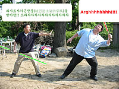
- - - Comments - - -
COMMENT:
AUTHOR: Scott D
EMAIL: scottdonaldson@gmail.com
IP: 146.244.138.82
URL: http://www.duringflight.com
DATE: 05/10/2005 04:46:16 PM
That was brilliant! I have to learn the sacred "flatulating palm technique" and try it out at our next BBQ. ...sans socks and sandals of course.
-----
COMMENT:
AUTHOR: groovebunny
EMAIL: wabbit@groovebunny.com
IP: 209.246.244.1
URL: http://www.groovebunny.com
DATE: 05/10/2005 06:41:59 PM
Being a girl who happens to enjoy a good fart joke now and then, my tummy hurts from laughing!
Useful
05/11/2005 11:27:27 AM
For Mac OS X users: I just want to give a shout out to AppleJack, a free troubleshooting utility for OS X:
Using AppleJack, you can repair your disk, repair permissions, validate the system's preference files, and get rid of possibly corrupted cache files. In most cases, these operations can help get your machine back on track. The important thing is that you don't need another startup disk with you. All you need to do is restart in Single User Mode (SUM), by holding down the command and s keys at startup, and then typing applejack, or applejack auto (which will run through all the tasks automatically), or applejack auto restart (which will also restart the computer automatically at the end of the process).
I'd been having some weird problems since upgrading to Tiger -- Mail 2.0 was displaying email with vast spaces between headers, and Transmit 3.1.1 refused to display the Queue window -- and running Disk Utilities, Diskwarrior, and TechTool Pro, trashing prefs files, etc., didn't help. Via AppleJack, I ran a Deep Auto cleanup, and sure enough, both problems went away.
If you're having issues that the other disk utility programs don't seem to address, you could do worse than to give AppleJack a shot.
- - - Comments - - -
COMMENT:
AUTHOR: hannah
EMAIL: misshannah@livejournal.com
IP: 128.104.27.51
URL:
DATE: 05/11/2005 12:26:13 PM
mmmm applejack
-----
COMMENT:
AUTHOR: B²
EMAIL: b@weirdsmobile.com
IP: 24.183.35.51
URL: http://www.weirdsmobile.com/b/
DATE: 05/11/2005 12:28:17 PM
Yes, that applejack is great for many other kinds of ills. :)
-----
COMMENT:
AUTHOR: jadedju
EMAIL: jadedju@ninewire.net
IP: 69.107.128.160
URL: http://jadedju.com
DATE: 05/11/2005 12:47:21 PM
I'm such a baby. I bought Tiger but haven't installed it because I'm so worried about the hell that might descend upon me. Thanks for the tip. It may (not sure yet) embolden me.
-----
COMMENT:
AUTHOR: brendan
EMAIL: leptard@gmail.com
IP: 140.203.9.25
URL: http://leptard.blogspot.com
DATE: 05/20/2005 05:11:12 AM
This looks brilliant; I'm definitely going to give it a try. Thanks.
-----
COMMENT:
AUTHOR: bruno
EMAIL: e@e.com
IP: 150.176.244.136
URL:
DATE: 05/25/2005 11:17:32 AM
thanks for the heads up-- gonna try it out!
Quiet Reflection
05/21/2005 02:50:44 AM
Uh.
1. The reason I like Shakers vodka is #1, it's just good freaking vodka, and #2, it's all-American. I've decided though that I can only drink vodka when I'm by myself. For some reason, when I drink it socially, it doesn't do anything to me. I mean, it'll do some things, like impair my motor control, but it doesn't actually give me the "drunk" feeling that one presumably drinks alcohol for. Extensive discussions with H on this subject lead to the tentative conclusion that vodka's lack of congeners is to blame. But whatever. The point is this:
2. Whenever I'm in a piss-poor mood, I like to flip open my dogeared copy of The Federalist Papers and gain inspiration through the words of the Founding Fathers.
James Madison: "You ever just feel like...fuck...y'know?"
Alexander Hamilton: "Dude."
John Jay: "Who the hell am I?"
3. John Jay, actually, was the first Chief Justice of the Supreme Court, and later the governor of New York. I think he was also the first Secretary of State, I'm not sure because have you actually tried reading U.S. history while intoxicated? Yeah, uh? One little known fact about John Jay is that he was the origin of the term "jaywalking." Apparently, everyone who knew him thought he was such a jerk that anything they didn't like doing, they named after him. Like, "Oh man, I've got to go take a Jay dump." Or "Aw mom, do I really have to do my Jay homework?" So, pretty soon, any kind of walking that was considered illegal or annoying was dubbed "Jay walking," or what we today call "jaywalking," and will in 1,000 years call "jwb33."
- - - Comments - - -
COMMENT:
AUTHOR: The Raz
EMAIL: KevinRazban@cox.net
IP: 70.187.167.167
URL:
DATE: 05/22/2005 01:02:46 AM
I noticed that about drinking that "Black Death" (?) vodka with you years and years ago. It really didn't do anything for you (but, hey, I liked it).
-----
COMMENT:
AUTHOR: Leslie
EMAIL: thynk2much@yahoo.com
IP: 82.35.42.193
URL:
DATE: 05/22/2005 08:25:00 AM
I can report that I get slobberingly and morosely drunk on vodka, so I'm not sure what you're doing incorrectly. Hint: it goes in the mouth hole.
-----
COMMENT:
AUTHOR: j-a
EMAIL: jeonga_kim@yahoo.co.uk
IP: 66.171.3.39
URL: http://www.whatarewedoinghere.blogspot.com
DATE: 05/22/2005 08:48:32 PM
is this true?
-----
COMMENT:
AUTHOR: B²
EMAIL: b@weirdsmobile.com
IP: 24.183.35.51
URL: http://www.weirdsmobile.com/b/
DATE: 05/23/2005 02:10:23 AM
Is which thing true? If you mean the effect of vodka on me, it does appear to be true. In fact, I just remembered that there was even one time where I was technically by myself but actually in communication with people (via computer) -- the National Drunken Writing Night -- where I drank almost a whole bottle of vodka and didn't feel a thing. So, I have to be completely alone in order to feel drunk from vodka. (Oh, I didn't elaborate on the congener effect, but my contention is that it's not the alcohol itself, but a combination of alcohol and the impurities in the alcohol, that produce the euphoric "drunk" feeling. Clearly more research is needed.)
If you mean the part about John Jay and jaywalking, I totally made that crap up while (alone and) drunk. I hope nobody incorporated that into any papers they were writing.
-----
COMMENT:
AUTHOR: Jim
EMAIL: chaos@corrupt.net
IP: 24.12.9.132
URL: http://chaos.corrupt.net
DATE: 05/23/2005 11:20:09 AM
I once told a friend that there was a Roman emperor named Palpatine who had a lot of trouble with a group of 'rebels' during his reign.
He actually started putting this into his Roman History paper (He was short on time and didn't know much about Roman history.) I was greatly amused and almost tempted to not tell him the truth.
-----
COMMENT:
AUTHOR: Sherri
EMAIL: Sylkenvelvet@yahoo.com
IP: 68.59.165.165
URL: http://www.formyselfandstrangers.blogspot.com
DATE: 05/24/2005 08:29:24 PM
I suppose just in the name of saying things, I should point out that John Jay is a direct ancester of my husband -- he was even named for him.
Not that that means he wasn't a jerk or anything, but it's another interesting fact. He's also got Sir Francis Drake back there somewhere. That's sort of like nobility. I'm of pure peasant stock myself.
And Grey Goose is a far superior vodka. You don't even need to drink it. Just spending the money will make you dizzy.
-----
COMMENT:
AUTHOR: maikopunk
EMAIL: maikopunk@yahoo.com
IP: 24.69.255.245
URL: http://maikopunk.blogspot.com
DATE: 05/25/2005 07:51:06 PM
National drunk writing night? that'd be a hoot. it'll be the hot new meme! get all F. Scott Fitzgerald and blog the new Great Gatsby! can you tell i've sampled the vodka already? yeah, thought so.
-----
COMMENT:
AUTHOR: RuKsaK
EMAIL: ruksakisland@hotmail.com
IP: 211.109.187.84
URL: http://ruksak.blogspot.com/
DATE: 05/29/2005 06:42:24 PM
Drunk writing? Is there another type?
Batman Begins: Seen.
Ass: Kicked.
So.
I'm getting ready to hit the sack, and really sleepy since I've been sleep-deprived for the past two days. (I'm trying the "let yourself become a zombie instead of taking a damn nap, and you'll be sleepy by bedtime" insomnia cure. Which actually rarely works for me, because I get all contrary and stay awake even if I can't actually keep my eyes open. But I keep trying.) For some reason I think about the Batman movie opening this week, and make a note to see it ASAP, because I've been dying to see it. Dying. And then I remember that it opens Wednesday. Woo-hoo! So I go and check out the movie listings, and it turns out that there's a midnight screening at the local multiplex.
Dude.
I've never gone to one of these midnight premieres before, but for some reason I get this itch. The itch grows. And finally I say "screw it," or maybe it was "ah, what the hey," or maybe "it's either this or go to sleep." In any case, a few minutes later I'm there. Now I'm back. A few thots:
Ways the movie really works:
1. Christopher Nolan shoots the early Gotham stuff like a cop drama, not a "superhero movie." So the scenes between the villains aren't just excuses for them to parade around in silly costumes, but have a gritty reality to them. And when things do get more comic booky later on, it's startling in the way that it should be, because the story's been firmly grounded in a recognizable reality.
2. Tight scripting. The story moves, and cheerfully heaves over the side anything that doesn't move the story forward, or build character development.
3. Coherent theme. The film is about fear, and one thing I love about Batman Begins is how every element of it supports the theme, right down to the choice of villain.
4. Character-based dialogue, not effect-based dialogue. Everything the characters say and do is rooted in who they are and what they want and what they're afraid of. There are no self-conscious winks at the camera. No incongruous witty quips to jar you out of the story. The comic relief is all grounded in character.
5. Perfect casting. Brilliant. Cillian Murphy makes a creepy, super-intense Scarecrow. Gary Oldman -- perfect "year one" Gordon. And for the first time in any of the movies, Batman actually scared the crap out of me. I live in fear now that certain cast members won't sign for at least 15 sequels.
6. The movie actually looks like it takes place in an actual city, and not some freaking soundstage.
Ways the movie shouldn't work, but does:
1. The suit. It's blocky and stiff, but in the context of the story, it makes sense, and provides a logical starting point for future evolution. It's not supposed to look perfect at this point -- it's all slammed together from off-the-shelf parts, so it's going to be clunky.
2. Katie Holmes. The complaints about the Rachel Dawes character being "useless" led me to expect another Vicky Vale fiasco, but in fact, Rachel is critical to the story Nolan is trying to tell, and definitely not your standard-issue love interest. She and Alfred represent Bruce Wayne's conscience and heart, respectively. So her presence in the film is not just useful, but necessary as a reminder of why Bruce isn't simply a homicidal vigilante, but a true hero and protector of Gotham. The only thing that will necessitate Joey -- I mean Rachel's death is if she starts climbing into Bruce's bedroom window every night in the next movie.
3. The action. Another complaint I've heard is that the fight scenes with Batman are too close-in and edited chaotically (a la Bourne Supremacy). This also works for Batman in a way that wouldn't work for another action hero, because, for one thing, in most of the scenes with Batman doing his thing, he's not an action hero at all, but a horror movie monster (from the bad guys' point of view), and he's filmed in that style rather than in the style of some martial arts flick. And second, shooting more tightly like that remedies one of the chief problems with the previous films, which is that a guy wearing a bat costume looks kind of stupid when fighting onscreen. So, by leaving much of the fight scenes to the imagination, the film conveys the aura of scary-ass invincibility that Batman's supposed to have.
4. The music. No thrilling, majestic Ode to Batman this time -- more of a low-key, pulsing beast of a score that's more scary than stirring. Which I think is totally appropriate for this film. Frankly, I'm kind of sick of all the bombastic Danny Elfman style themes. This isn't so much a superhero movie as a movie about a guy who dresses up like a bat to fight crime, and the music reflects that sensibility.
Thank you, thank you, thank you Mr. Nolan:
I was totally waiting for that obligatory scene where we first see Batman in action, rescuing a woman from being mugged and/or raped by thugs in some alleyway. But no!
Ways the movie doesn't work:
You know, I honestly can't think of any right now. It does everything that it's supposed to do, and then some. I could probably find some nits to pick if I felt like it, but I so don't right now.
Who should play The Joker in the next movie:
Jude Law.
I mean, guy's even got the same hairline. Come on!
I'm going insane from lack of sleep right now, but: so worth it!
- - - Comments - - -
COMMENT:
AUTHOR: Sherri
EMAIL: Sylkenvelvet@yahoo.com
IP: 68.59.165.165
URL: http://www.formyselfandothers.blogspot.com
DATE: 06/15/2005 09:41:07 AM
ok you've persuaded me. I'll break my "No More Theatre Movie Viewing" rule...but I'm taking earplugs.
-----
COMMENT:
AUTHOR: Jim
EMAIL: chaos@corrupt.net
IP: 24.12.9.132
URL: http://chaos.corrupt.net
DATE: 06/15/2005 10:28:21 AM
Hey, I agree with pretty much everything in the post! Except about the music and Gordon.
The music was fine, but a rousing theme swelling up in the second half of the movie would have really hit the spot.
Oldman's year one Gordon was good and valid, but not what I personally envision as the perfect Gordon. I liked that he was scared, but I wish he was more indepedently determined as he was in Batman: Year One. Maybe that would be too much to fit in.
-----
COMMENT:
AUTHOR: B²
EMAIL: b@weirdsmobile.com
IP: 24.183.35.51
URL: http://www.weirdsmobile.com/b/
DATE: 06/15/2005 11:48:54 AM
Sherri: Yeah, I totally know what you mean. I was thinking before the movie that, with DVD prices as low as they are, there really has to be a GOOD REASON for me to venture into a theater -- especially for a non-matinee show.
Jim: Good points! Yeah, I agree on both points. I liked the subdued music in the first half, and while I didn't have a huge problem with the music in the second half, a rousing theme would have been the cherry on top. And I did have an issue with Gordon being so damned cooperative from the get-go. One thing I always liked about the Gordon-Batman relationship is that Gordon wasn't afraid to tell Batman where to stick it, that he wasn't as impressed with The Suit as everyone else.
-----
COMMENT:
AUTHOR: Scott
EMAIL: scottdonaldson@gmail.com
IP: 68.111.191.131
URL: http://www.duringflight.com/groundcontrol/
DATE: 06/15/2005 07:39:12 PM
I was brousing through your post (as not to spoil anything or give me a first impression before I see it) ...and I have to say that I am getting the itch to see this sucker as soon as possible.
The first Batman movie was fasionable and slightly silly and by the last one they were silly and barely fasionable.
This one seems like it will kick ass and carry a better reason for the psyche of "The Batman"
Now, go take a nap.
...oh!
p.s. The wife is pregnant. 9 weeks.
:-)
-----
COMMENT:
AUTHOR: Mandy
EMAIL: mandy@mandelion.com
IP: 69.151.98.98
URL: http://www.mandelion.com
DATE: 06/16/2005 12:08:19 PM
I am so jealous you got to see it!!!
-----
COMMENT:
AUTHOR: Mandy
EMAIL: mandy@mandelion.com
IP: 69.151.98.98
URL: http://www.mandelion.com
DATE: 06/16/2005 12:09:33 PM
BTW, my site's back online with my interview with Vanilla Ice because I'm to the extreme and rock the mic like a vandal and can light up stage and wax a chump like a candle.
-----
COMMENT:
AUTHOR: groovebunny
EMAIL: wabbit@groovebunny.com
IP: 209.246.244.1
URL: http://www.groovebunny.com
DATE: 06/16/2005 04:17:41 PM
I didn't read your write-up yet cause I'm seeing the movie tonight! But I do agree with you that Jude Law should play the Joker. He's also got Joker's beady eyes. :)
-----
COMMENT:
AUTHOR: j-a
EMAIL: jeonga_kim@yahoo.co.uk
IP: 66.171.3.39
URL: http://www.whatarewedoinghere.blogspot.com
DATE: 06/18/2005 01:05:10 AM
i'm the same - meant to watch it tomorrow. so will read afterwards...
-----
COMMENT:
AUTHOR: groovebunny
EMAIL: wabbit@groovebunny.com
IP: 68.224.168.139
URL: http://www.groovebunny.com
DATE: 06/20/2005 01:49:20 PM
Okay I'm back. Excellent write-up B! I agree with you on every point, especially the Rachel Dawes character. Except I didn't care for Holmes cast as Rachel Dawes. I've never thought Katie was a good actress and her playing a DA just wasn't believable to me at all. I'm not sure who would have played a believable Dawes for me, but it sure isn't Holmes.
Open Thread
06/20/2005 06:09:14 PM
Just kidding. I'm so tired of seeing "open thread" posts on weblogs. I don't know why, but it's really starting to bug me. I mean, honestly, is there any more succinct way to say "I'm just phoning it in" than to post "open thread" entries every fucking half hour? Note that I used the "f" word* in that sentence in order to underscore my high level of outrage in regard to this incredibly important issue.
* "fuck"
Donation Links
08/31/2005 09:42:24 PM
Stole this from Kos:
The American Red Cross
Donation Link: Click here and select 'Donate Now'.
Relief focus: The Red Cross provides a full spectrum of services to disaster victims. From assistance with shelter, medical care, food, clean water and cleanup efforts, the Red Cross is an organization poised to assist in circumstances such as this.
Feed The Children
Donation Link: Click here and follow the donation link.
Relief focus: Feed the Children has long been competent at mobilizing and distributing supplies to disaster victims and victims of famine and disease. They are currently mobilizing a massive relief effort by gathering needed supplies and getting them to hurricane devastated areas.
The Salvation Army
Donation Link: Click here and follow the donate on line link.
Relief focus: The Salvation Army is prepared to provide 400,000 hot meals a day to displaced disaster victims and emergency personnel working to aid those devastated by Hurricane Katrina. They also provide a means for individuals to physically volunteer their time and assistance in the relief efforts.
United Jewish Communities
Donation Link: Click here and choose upper-right Katrina relief links.
Relief focus: Community organized and administered humanitarian relief for disaster victims.
Catholic Charities USA
Donation Link: Click here and follow instructions to donate online, by mail, or by phone.
Relief focus: Community based relief efforts focused on the long-terms needs of disaster victims and affected communities.
United Methodist Committee on Relief
Donation Link: Click here and follow the 'Donate Now' link.
Relief focus: Although they provide general community-based disaster relief, they are also focusing on the creation and distribution of "flood buckets", a more hands-on relief item for those who prefer to donate with a personal touch.
Noah's Wish
Donation Link: Click here and scroll to the bottom of the page.
Relief focus: Noah's Wish is a not-for-profit, animal welfare organization, with a straightforward mission. We exist to keep animals alive during disasters. That's it.
Humane Society of the United States
Donation Link: Click here.
Relief focus: Dispatching Disaster Animal Response Teams (DARTs) to rescue animals and assist their caregivers.ASPCA
Donation Link: Click here and choose the type of giving you prefer.
Relief focus: Although they do not yet have anything specific to Katrina up on their site, the ASPCA sends emergency relief to animal shelters when natural disasters occur.
North Shore Animal League America
Donation link: Click here and select 'Donate'.
Relief focus: NSAL America has an emergency response team that is ready to respond in the event of an emergency. In 2004, we responded to the devastating hurricanes in the south.
United Way
Donation Link: Click here and follow Katrina donation links.
Relief focus: United Way is leading response and recovery efforts by working hard to identify the most serious needs of devastated communities and is committed to helping not only with front-line disaster relief but with long-term recovery?those needs that are often not addressed in the days, weeks and months following a disaster.
America's Second Harvest
Donation link: Click here.
Relief focus: They expect at least ten food banks and hundreds of related agencies will be hit by hurricane 'Katrina'. Their Network is in great need of funds to transport food to victims and secure additional warehouse space to assist our Member food banks in resuming and maintaining operations.
Direct Relief International
Donation link: Click here and select 'Support Us'.
Relief focus: Because of the organization?s extensive medical inventories, Direct Relief serves as a private back-up support to official emergency response efforts in the United States.
Habitat for Humanity
Donation link: Click here and follow the Katrina link.
Relief focus: Helping disaster victims rebuild piece by piece and house by house.
Old Shit/New Shit
06/21/2005 03:57:52 AM
CHAPTER ONE
ABSOLUTELY NOTHING HAVING TO DO WITH
OLD LADIES, HARRY POTTER, OR GETTING DRUNK,
EXCEPT MAYBE GETTING DRUNK AND/OR OLD
I'm tired of the old shit
Let the new shit begin
Eels
Barry stubbed his cigarette out on his forehead, because he was such a fucking badass. Ignoring the sizzle of burning skin and flesh, he hopped off the Dogwarts Express and regarded the other first-year students with a lazy grin. One of them would come for him soon. And soon enough, of course, one did, a lanky blond named Malfag, who lunged at him with a homemade shiv as they were filing into the main hall. Barry was ready with his wand, however, and there was a bright, deadly flash of light, the other side of which found Malfag twitching on the ground, clutching feebly at the charred hole where the crotch of his uniform pants had been.
from Barry Totter and the Sorcerer's Stones by Babs Delfino
And when the evening comes we smile
So much of life ahead
We'll find a place where there's room to grow
And yes! We've just begun
The Carpenters
Why does anything begin or end? Because we impose definitions for beginnings and endings upon an infinite or infinitely chaotic universe? Because we intuit natural breaks in the flow of that which we call things? Because we feel internal ebbs and flows within ourselves that we interpret in terms of openings and closings?
I'm stroking my goatee thoughtfully as I ponder these and other equally important and useless questions.
• Why did Martin Van Buren, eighth President of the United States (1837-1841), fail of reelection?
• Why is pizza by the slice so much more satisfying, than, say, an entire pizza of the same type?
• Why do stars fall down from the sky, every time you walk by?
• Karen Carpenter is one of the greatest vocalists of 20th century popular music.
Oops, that last one wasn't a question, although it is an assertion that could be questioned, albeit only by someone who was partially deaf, I mean come on! But I digress. What I was trying to say before I so rudely interrupted myself is that things begin and end, for reasons that remain entirely mysterious and shifty, like that guy who just walked into Walgreen's and headed straight for the cosmetics aisle. What's with that? Don't look at him, stupid! Do you want to get shanked in the parking lot? Sheesh.
Relationships end because we don't want what we have, or there's something that we want more. Jobs end because we find something better, or the employer doesn't want us, or we fucked up somehow, or the job itself goes away. Stories end because resolution has been achieved and to keep going would just be boring, or because all of the relevant people are dead, which I guess is kind of a resolution in itself, or because the author just gives up. Lives end because our bodies give out on us, or we give up on our lives. Or maybe there are other reasons for why all of those things end, like something that we just feel, coming from "the cosmos" or "God" or "whatever." Maybe there's something beneath the fabric of what we see and understand and know and feel that determines our fates to a degree of precision that would horrify us if we were able to perceive it.
Karen Carpenter ended because her desire for control overcame her desire to live. The Carpenters, however, keep going on and on, because Richard Carpenter's desire to keep making money off of The Carpenters has overcome any awareness of the natural end of The Carpenters as a creative entity. Carpenters fandom will never end, because come on!
Do things really "end" if we continue to remember and therefore relive them? But how do we know if something ended at all, if the only way that it can end is if we forget that it even existed? Oh ho! But what's this? Yes (sadly) once again I've got your nose.
This is the natural end of this weblog entry.
The Beegie Adair Trio Play Songs of Love
06/25/2005 02:11:54 AM
CHAPTER TWO
THE BEEGIE ADAIR TRIO PLAY SONGS OF LOVE
Barry was drunk again. Drunk. Off. His. Ass. Don Beasley, his best friend at Dogwarts, had begun avoiding him, looking the other way when they passed in the hallway between classes. What was up with that? And the other day, at breakfast, he'd seen Germione tsk-ing and shaking her head at him. Why? Because he'd vomited in a pitcher of orange juice? Fuck Germione. Fuck Don. Fuck the whole disloyal lot of them. The weight of their judgment was more draining than being attacked by a thousand Spamentors. And while he was at it, fuck Bumblebore, too. I mean, come on, what kind of dumbass name was Bumblebore, anyway?
from Barry Totter and the Prisoner of Asskissastan by Babs Delfino
He became aware, as the days quickened into weeks, of how profoundly empty his life had become. Empty? Emptied, rather. It was the vacuum that defined his emptiness. The absence of something that had been present, once, long ago, in a past that now existed only as an idealized absolute. The slow hiss of escaping air, not the shriveled rubber of the balloon, was what drew his attention.
Every day of the past twenty years of his life was another maggot feeding off the flesh of his present. The days burrowed into his body and ate what they could, before their transformation into winged things that flew away in search of fresh corpses upon which to lay their own eggs. Time, for him, was decay. Age was putrescence. The stink of rotting flesh was the smell of his own failure.
He wondered, now and then (more now than then), what they would say about him when he was dead. He spent whole afternoons composing, in absentia, eulogies to himself from his friends and his detractors. One went like this: "He had a brilliant mind, but what was the point of it when he did nothing with it, like a sports car that the owner keeps in his garage?" Another went like this: "His genius lay in convincing others that he was a genius." An ex-lover had this to say: "He only wanted to fuck when he was drunk, but when he was drunk he couldn't fuck."
He would pause at that point, breathless with awareness of his own masturbatory self-regard.
"There is that of God in everyone." Everyone? The cretinous oafs who infested the supermarkets and streets of his town, the insensate mediocrities who surfed on waves of infantile self-gratification from within their comfortable bubbles of oblivion? These were his peers? His brethren? He felt no more kinship with these imbeciles than he did with the capuchin monkeys at the zoo.
And yet...and yet, was he any different from them? Really? No, and that fact only fueled his outrage. Was it any wonder, then, that he retreated to the spiritual realm, where grace invariably trumped contempt? He wondered sometimes if he used religion the way he used pornography, as an escape into a fantasy world in which the laws of human nature need not apply.
The slow hiss of escaping air. The absence of that which defined him by his defiance of it. The crushing ordinariness of the human experience. The onrushing spectre of death. These things ruled his thoughts night and day. Ruled him so that he was reduced to the status of a peasant in his own consciousness.
But, you know, with the occasional laff.
How Bitterness Consumes the Self-Indulgent
06/28/2005 12:09:23 AM
CHAPTER THIRTY-SIX
HOW BITTERNESS CONSUMES THE SELF-INDULGENT
"Can anyone tell us the incantation to turn this owl into a newt?" asked Professor McGollamoggle. "Totter?"
"Braaaaaaaaap."
"Totter!" gasped the professor.
from Barry Totter and the Goblet of Diminishing Returns by Babs Delfino
In the end, it was the silver flask given to him by his dying mentor that saved him from the assassin's bullet.
Six months later, lying on a beach in San Pelagro, he reflected upon the marvelous adventures he'd enjoyed. Sifting through junk mail. Straightening his socks to make sure the seam didn't get caught in the curl of his toes. Wiping dried mustard off of his DVD of You've Got Mail. That was the kind of life a man remembered on his deathbed, the kind that would send him on to the next world with his honor intact.
What would the critics make of his final work, he mused, sucking forcefully on a straw stuck into some indeterminate type of mixed drink served in a coconut shell. The manuscript of his magnum opus, The Burning of Loin 17, was locked in a safe in his study, back in the straw hut he called his home on the island of San Pelagro. A safe that was also made out of straw. Like life itself. It would be found -- the manuscript, not the safe, although of course the safe would also necessarily be found if the manuscript were to be found -- only after his death (and it would be a lonely death).
He doubted that the critics would be kind. "Self-indulgent!" they'd snarl. "Jejeune!" they'd bark. "Made of straw!" they'd grunt. And what of it? What would he care, once he was cold and stiff inside his grave? Especially if he were dead? For all he cared, his critics could all go and perform a certain "indelicate" function upon themselves, one that involved fucking themselves in their own asses.
A white-hot bolt of pain surged up the length of his left arm and through his mouth up into the center of his forehead. "Welp, this is it," he had time to mutter, to no one in particular, and then he, Rudolph Jasper Toronado, the man who ate Braunschweiger with unapologetic glee, died upon the sands of San Pelagro, as crabs feasted on his eyeballs.
THE END
Float
07/01/2005 03:53:47 AM
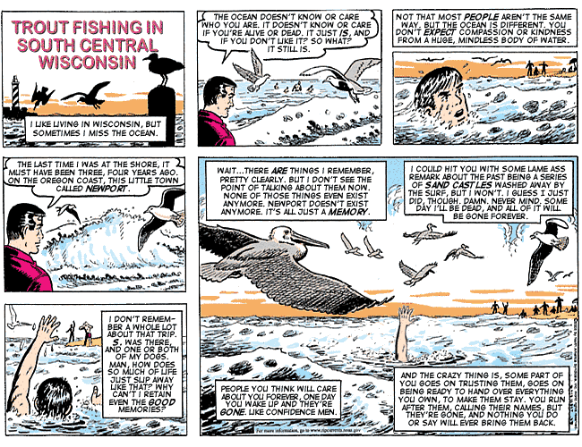
Love in a Time of Despair
07/09/2005 05:18:04 AM
Fun Comix Friday!!!
07/15/2005 02:31:37 PM
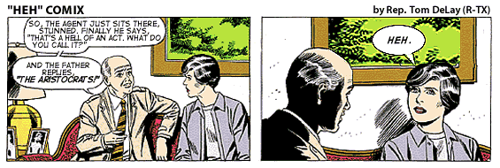
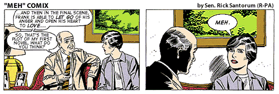
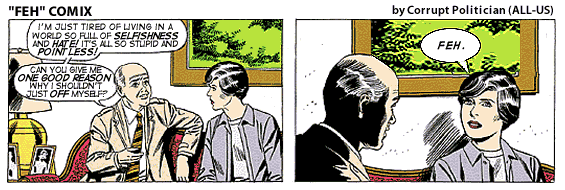
Extraordinary Popular Delusions and the Madness of Assclowns
07/21/2005 04:26:49 PM
1. Some things are good, while other things suck.
2. Things that are good are, generally speaking, good.
3. Things that suck, tend to suck.
4. Some things are popular, while other things are unpopular.
5. Things that are popular are sometimes good, but other times suck.
6. Things that are unpopular are sometimes good, but other times suck.
7. Because something is popular does not necessarily mean that it is good.
8. Conversely, because something is popular does not necessarily mean that it sucks.
9. Some people believe that anything popular must necessarily suck.
10. Those people suck.
- - - Comments - - -
PING:
TITLE: And we're back
URL: http://dullroar.org/blog/archives/000144.html
IP: 209.123.8.48
BLOG NAME: Dullroar
DATE: 07/22/2005 07:30:34 PM
Yes, I'm now married and back from the honeymoon. In a word, it was all fantastic. I have many stories, and I promise I will share none of them (almost). Meanwhile, here we have a pic of the Eiffel...
Plaza Napkin: Overheard Convo and Groovy Monster Drawn by Hannah
07/27/2005 09:27:09 AM
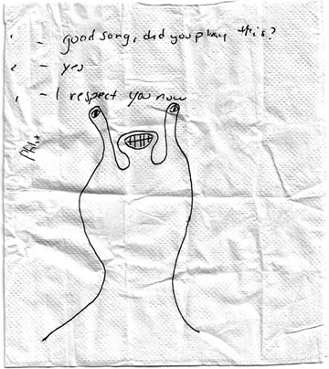
Total Eclipse of the Heart
08/02/2005 07:21:00 AM
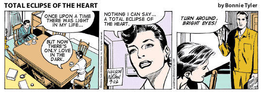
Friday Cat Blogging!
08/05/2005 03:10:31 AM
Although I've never personally owned a cat, I've hung out and lived in cat-friendly households, so I'm no enemy of cats. However, having spent some time in the home of Miss H, a friend of two cats, I've come to realize that many, if not most, cat owners are completely unaware of certain scientifically proven facts* regarding cat physiology that may prove shocking to cat-friendly folks who aren't up on the latest research.
While they are undeniably fuzzy, cute creatures, cats are in fact bearers of almost certainly dangerous, even lethal contaminants. These contaminants, too tiny or diffuse to be detectable by human senses, range in form from oils to orificial gases. In order to help the cat owner, or those who come into regular contact with cats, to identify and avoid contamination by these pathogenic substances, I've created this handy guide to the most dangerous cat-based contaminants.
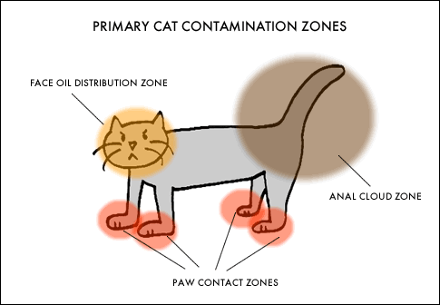
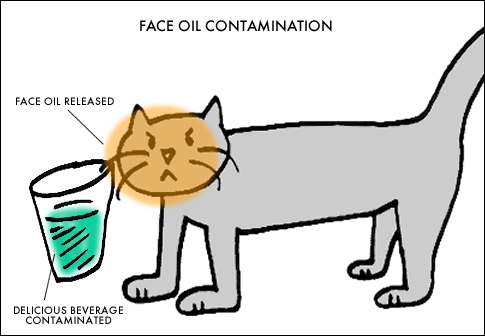
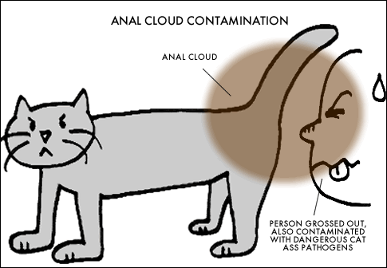
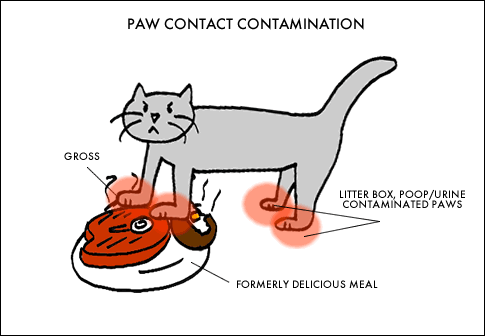
- - - Comments - - -
Presidential Mailbag
08/13/2005 02:04:45 AM
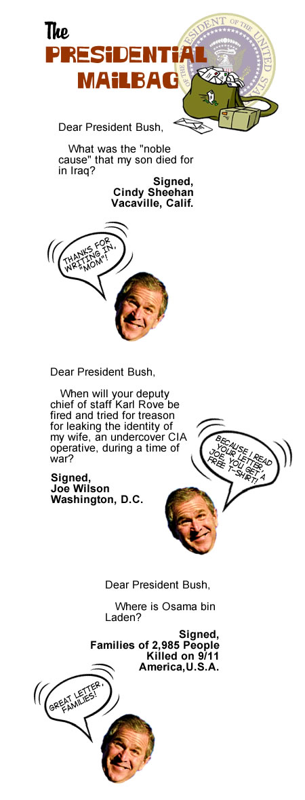
Support the Troops
08/18/2005 02:04:46 AM
support the troops
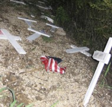
Fallen
08/18/2005 02:32:42 AM
Army Sgt. Andrew L. Bossert, 24, of Fountain City, Wisconsin.
Bossert died in Ramadi, Iraq, when a vehicle-borne improvised explosive device detonated near his screening area. He was assigned to the 44th Engineer Battalion, 2nd Brigade Combat Team, 2nd Infantry Division, Camp Howze, Korea. Died on March 7, 2005.
Army Pfc. Rachel K. Bosveld, 19, of Waupun, Wisconsin.
Bosveld was fatally injured during a mortar attack on the Abu Ghraib Police Station in Iraq. Bosveld was assigned to the 527th Military Police Company, V Corps, Giesen, Germany. Died on October 26, 2003.
Marine Pfc. Ryan J. Cantafio, 22, of Beaver Dam, Wisconsin.
Cantafio died as result of enemy action in Al Andar Province, Iraq. He was assigned to the Marine Corps Reserve's 2nd Battalion, 24th Marine Regiment, 4th Marine Division, Chicago, Illinois. Died on November 25, 2004.
Army Staff Sgt. Todd R. Cornell, 38, of West Bend, Wisconsin.
Cornell died in Fallujah, Iraq, when acting in an advisory support capacity and his Iraqi unit came under attack by enemy forces using small arms fire. He was assigned to the Army Reserve's 1st Battalion, 339th Infantry Regiment, Fraser, Michigan. Died on November 9, 2004.
Army Sgt. 1st Class Donald W. Eacho, 38, of Black Creek, Wisconsin.
Eacho died in Ar Ramadi, Iraq when an improvised explosive device detonated near his patrol. He was assigned to the 1st Infantry Battalion, 9th Infantry Regiment, 2nd Brigade Combat Team, Fort Carson, Colorado. Died on March 4, 2005.
Marine Sgt. Benjamin C. Edinger, 24, of Green Bay, Wisconsin.
Edinger died at the National Naval Medical Center, Bethesda, Maryland, from injuries received as result of enemy action in Al Anbar Province, Iraq on November 14, 2004. He was assigned to 2nd Force Reconnaissance Company, II Marine Expeditionary Force, Camp Lejeune, North Carolina. Died on November 23, 2004.
Army Pfc. Nichole M. Frye, 19, of Lena, Wisconsin.
Frye died in Baqubah, Iraq, when an improvised explosive device struck her convoy. She was assigned to Company A, 415th Civil Affairs Battalion, U.S. Army Reserve, Kalamazoo, Michigan. Died on February 16, 2004.
Army Sgt. 1st Class Dan H. Gabrielson, 39, of Spooner, Wisconsin.
Gabrielson was killed by hostile fire in Ba Qubah, Iraq while traveling in a convoy that came under attack. He was assigned to the 652nd Engineer Company, Ellsworth, Wisconsin. Died on July 9, 2003.
Marine Pfc. Andrew Halverson, 19, of Grant, Wisconsin.
Halverson died as result of enemy action in Al Anbar Province, Iraq. He was assigned to 2nd Battalion, 5th Marine Regiment, 1st Marine Division, I Marine Expeditionary Force, Camp Pendleton, California. Died on October 9, 2004.
Army Sgt. Warren S. Hansen, 36, of Clintonville, Wisconsin.
Hansen died when two 101st Airborne Division (Air Assault) UH-60 Black Hawk helicopters crashed in Mosul, Iraq. He was assigned to the 9th Battalion, 101st Aviation Regiment, 101st Airborne Division (Air Assault), Fort Campbell, Kentucky. Died on November 15, 2003.
Army Pfc. Bert. E. Hoyer, 23, of Ellsworth, Wisconsin.
Hoyer died in Baqubah, Iraq, when an improvised explosive device hit his convoy. He was assigned to the 652nd Engineer Company, U.S. Army Reserve, Ellsworth, Wisconsin. Died on March 10, 2004.
Army Pfc. Isaiah R. Hunt, 20, of Green Bay, Wisconsin.
Hunt died in Baghdad, Iraq, when the driver of his military vehicle accidentally struck another vehicle. He was assigned to the 782nd Main Support Battalion, 82nd Airborne Division, Fort Bragg, North Carolina. Died on November 15, 2004.
Army Capt. Benjamin D. Jansky, 28, of Oshkosh, Wisconsin.
Jansky died in Al Taqaddum, Iraq, when his HMMWV was accidentally struck by another military vehicle. He was assigned to the Army Reserve's 983rd Engineer Battalion, Monclova, Ohio. Died on July 27, 2005.
Marine Pfc. Ryan M. Jerabek, 18, of Oneida, Wisconsin.
Jerabek died due to hostile fire in Al Anbar Province, Iraq. He was assigned to 2nd Battalion, 4th Marines, 1st Marine Division, I Marine Expeditionary Force, Camp Pendleton, California. Died on April 6, 2004.
Army Spc. Charles A. Kaufman, 20, of Fairchild, Wisconsin.
Kaufman died in Baghdad, Iraq, where a vehicle-borne improvised explosive device detonated near his HMMWV. He was assigned to the Army National Guard's 1st Battalion, 128th Infantry, Arcadia, Wisconsin. Died on June 26, 2005.
Army Staff Sgt. Charles A. Kiser, 37, of Cleveland, Wisconsin.
Kiser died in Mosul, Iraq, when an explosion occurred near his convoy. He was assigned to the Army Reserve's 330th Military Police Detachment, Sheboygan, Wisconsin. Died on June 24, 2004.
Army Capt. John F. Kurth, 31, of Wisconsin.
Kurth died in Tikrit, Iraq, when his patrol encountered an improvised explosive device. He was assigned to the 1st Battalion, 18th Infantry Regiment, based in Schweinfurt, Germany. Died on March 13, 2004.
Army Sgt. Mark A. Maida, 22, of Madison, Wisconsin.
Maida died in Baghdad, Iraq, of injuries sustained in Diyarah, Iraq on May 26, 2005 when an improvised explosive device detonated near his HMMWV. He was assigned to the 2nd Squadron, 11th Armored Cavalry Regiment, Fort Irwin, California. Died on May 27, 2005.
Army Staff Sgt. Stephen G. Martin, 39, of Rhinelander, Wisconsin.
Martin died at Walter Reed Army Medical Center in Washington, D.C., from injuries sustained in Mosul, Iraq, on June 24, 2004 when a car bomb exploded near his guard post. He was assigned to the Army Reserve's 330th Military Police Detachment, Sheboygan, Wisconsin. Died on July 1, 2004.
Marine Lance Cpl. John J. Mattek, Jr., 24, of Stevens Point, Wisconsin.
Mattek died from wounds received as a result of an explosion while conducting combat operations against enemy forces in Al Anbar Province, Iraq, on June 8, 2005. He was assigned to the 2nd Light Armored Reconnaissance Battalion, Regimental Combat Team-2, 2nd Marine Division, II Marine Expeditionary Force, Camp Lejeune, North Carolina. Died on June 13, 2005.
Army Spc. Michael A. McGlothin, 21, of Milwaukee, Wisconsin.
McGlothin died in Baghdad, Iraq, when an improvised explosive device exploded near his patrol. He was assigned to 115th Forward Support Battalion, Division Support Command, 1st Cavalry Division, Fort Hood, Texas. Died on April 17, 2004.
Marine Lance Cpl. Shane K. O'Donnell, 24, of DeForest, Wisconsin.
O'Donnell died as a result of enemy action in Babil Province, Iraq. He was assigned to the 2nd Battalion, 24th Marine Regiment, 4th Marine Division, Marine Corps Reserve, Chicago, Illinois. Died on November 8, 2004.
Army Staff Sgt. Todd D. Olson, 36, of Loyal, Wisconsin.
Olson died in the 67th Combat Support Hospital in Tikrit, Iraq from wounds sustained in Samarra, Iraq on December 26, 2004, when an improvised explosive device detonated. He was assigned to the National Guard's 1st Battalion, 128th Infantry Regiment, Neillsville, Wisconsin. Died on December 27, 2004.
Army Spc. Eric J. Poelman, 21, of Racine, Wisconsin.
Poelman died in Baghdad, Iraq, when an improvised explosive device detonated near his military vehicle. He was assigned to the 3rd Squadron, 3rd Armored Cavalry Regiment, Fort Carson, Colorado. Died on June 5, 2005.
Marine Cpl. Brian P. Prening, 24, of Sheboygan, Wisconsin.
Prening died as result of enemy action in Babil Province, Iraq. He was assigned to Marine Corps Reserve's 2nd Battalion, 24th Marine Regiment, 4th Marine Division, Chicago, Illinois. Died on November 12, 2004.
Army Pfc. Sean M. Schneider, 22, of Janesville, Wisconsin.
Schneider died as the result of a vehicle accident near Baghdad. He was assigned to the 115th Forward Support Battalion, Fort Hood, Texas. Died on March 29, 2004.
Army Maj. Mathew E. Schram, 36, of Wisconsin.
Schram was killed while traveling in a military convoy on a resupply mission when they encountered enemy fire in Hadithah, Iraq. He was assigned to the HHT Support Squadron 3rd ACR, Fort Carson, Colorado. Died on May 26, 2003.
Army CW2 Joshua Michael Scott, 28, of Sun Prairie, Wisconsin.
Scott died from injuries sustained on May 26, 2005 in Buhriz, Iraq, when his OH-58 (Kiowa Warrior) came under small arms attack and crashed. He was assigned to the 1st Squadron, 17th Cavalry Regiment, 82nd Airborne Division, Fort Bragg, North Carolina. Died on May 27, 2005.
Marine Staff Sgt. Chad J. Simon, 32, of Madison, Wisconsin.
Simon died while under hospice care in Madison, Wisconsin from wounds he received on November 8, 2004 from an explosion while conducting combat operations in Babil Province, Iraq. He was assigned to Marine Forces Reserve s 2nd Battalion, 24th Marine Regiment, 4th Marine Division, Madison, Wisconsin. Died on August 4, 2005.
Marine Cpl. Adrian V. Soltau, 21, of Milwaukee, Wisconsin.
Soltau died due to enemy action in Al Anbar Province, Iraq. He was assigned to 3rd Assault Amphibian Battalion, 1st Marine Division, I Marine Expeditionary Force, Camp Pendleton, California. Died on September 13, 2004.
Army Maj. Christopher J. Splinter, 43, of Platteville, Wisconsin.
Splinter died when his vehicle struck an improvised explosive device on Highway One near Samarra, Iraq. He was assigned to the 5th Engineer Battalion, 1st Engineer Brigade, Fort Leonard Wood, Missouri. Died on December 24, 2003.
Marine Sgt. Kirk Allen Straseskie, 23, of Beaver Dam, Wisconsin.
Drowned in a canal near Al Hillah, Iraq, when he attempted to rescue the crewmembers of a Marine CH-46 helicopter that went down in the canal. Straseskie was assigned to the 1st Battalion, 4th Marine Regiment, Camp Pendleton, California. Died on May 19, 2003.
Army Spc. Paul J. Sturino, 21, of Rice Lake, Wisconsin.
Sturino died from a non-combat weapons discharge in Quest, Iraq. He was assigned to B Battery, 2nd Battalion, 320th Field Artillery Regiment, Fort Campbell, Kentucky. Died on September 22, 2003.
Marine Cpl. Jesse L. Thiry, 23, of Casco, Wisconsin.
Thiry died due to injuries received from hostile fire in Al Anbar Province, Iraq. He was assigned to 1st Battalion, 5th Marines, 1st Marine Division, I Marine Expeditionary Force, Camp Pendleton, California. Died on April 5, 2004.
Army Spc. John O. Tollefson, 22, of Fond du Lac, Wisconsin.
Tollefson died in Ashraf, Iraq, when an improvised explosive device detonated near his HMMWV while out on patrol. He was assigned to the 411th Military Police Company, 720th Military Police Battalion, 89th Military Police Brigade, Fort Hood, Texas. Died on July 27, 2005.
Army Spc. Eugene A. Uhl III, 21, of Amherst, Wisconsin.
Uhl died when two 101st Airborne Division (Air Assault) UH-60 Black Hawk helicopters crashed in Mosul, Iraq. He was assigned to the 1st Battalion, 320th Field Artillery, 101st Airborne Division (Air Assault), Fort Campbell, Kentucky. Died on November 15, 2003.
Marine Pfc. Brent T. Vroman, 21, of Oshkosh, Wisconsin.
Vroman died from wounds received as a result of enemy action in Babil Province, Iraq. He was assigned to the Marine Corps Reserve's 2nd Battalion, 24th Marine Regiment, 4th Marine Division, Chicago, Illinois. Died on December 13, 2004.
Marine Lance Cpl. Richard D. Warner, 22, of Waukesha, Wisconsin.
Warner died from wounds received as a result of enemy action in Babil Province, Iraq. He was assigned to the Marine Corps Reserve's 2nd Battalion, 24th Marine Regiment, 4th Marine Division, Chicago, Illinois. Died on December 13, 2004.
Marine Cpl. Robert P. Warns II, 23, of Waukesha, Wisconsin.
Warns died as a result of enemy action in Babil Province, Iraq. He was assigned to the 2nd Battalion, 24th Marine Regiment, 4th Marine Division, Marine Corps Reserve, Chicago, Illinois. Died on November 8, 2004.
Marine Lance Cpl. Travis M. Wichlacz, 22, of West Bend, Wisconsin.
Wichlacz died as a result of hostile action in Babil Province, Iraq. He was assigned to Marine Forces Reserve's 2nd Battalion, 24th Marine Regiment, 4th Marine Division, Milwaukee, Wisconsin. Died on February 5, 2005.
Army Spc. Michelle M. Witmer, 20, of New Berlin, Wisconsin.
Witmer died in Baghdad, Iraq, when she became involved in an improvised explosive device and small arms attack. She was assigned to the Army National Guard's 32nd Military Police Company, Milwaukee, Wisconsin. Died on April 9, 2004.
Army 1st Lt. Jeremy L. Wolfe, 27, of Menomonie, Wisconsin.
Wolfe died when two 101st Airborne Division (Air Assault) UH-60 Black Hawk helicopters crashed in Mosul, Iraq. He was assigned to the 4th Battalion, 101st Aviation Regiment, 101st Airborne Division (Air Assault), Fort Campbell, Kentucky. Died on November 15, 2003.
Marine Lance Cpl. Daniel R. Wyatt, 22, of Calendonia, Wisconsin.
Wyatt died on due to enemy action in Babil Province, Iraq. He was assigned to 2nd Battalion, 24th Marine Regiment, 4th Marine Division, Marine Corps Reserve, Chicago, Illinois. Died on October 12, 2004.
• • •
Source: Fallen Heroes Memorial
meetwithcindy.org
Hastily Written Tales of the Unexpected
08/21/2005 02:14:48 AM
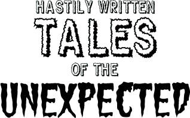
George "Dubya" Bush, President of the United States, blinked in the glare of the bright TV lights as he prepared to address the nation. It was only a minute or so before they went live. Wiping sweat off his brow, he turned to his deputy chief of staff, Karl Rove, who was sitting in an armchair in the corner of the room, strangling a tiny baby fur seal. "Can't Cheney or Rumsfeld do this speech instead?" Bush whined.
"I'm sorry, Mr. President," said Rove, casting aside the limp body of the baby fur seal and reaching into his sack for another one. "Dick is down in the White House cellar, exchanging his blood with that of prepubescent children, and Rumsfeld is sitting naked in a broom closet, babbling and smearing feces all over himself."
"Dang it," grumbled Bush. He hated not getting his way! Just then the puffy, cadaverous moon face of his Press Secretary, Scott McClellan, entered his field of vision.
"Five seconds, Mr. President," McClellan said. Of course, there were actually seven seconds until airtime, but McClellan, whose head was about the same size and shape as his own buttocks, was congenitally incapable of uttering a truthful statement.
Bush quickly composed himself for the camera, taking a quick moment to make sure the tape holding down his middle fingers was secure.
"Five...four...three...two...one...um, zero...minus one!"
"My fellow Americans," Bush said to the camera, in his fake ass Texas drawl, "many of you are no doubt aware of the demonstration, led by Cindy Sheehan, that is taking place near my Crawford, Texas ranch, where I am taking a much-needed rest from the stress of fighting this war on terror. While I cannot meet with Ms. Sheehan at this time, I extend to her my heartfelt sympa--AAAAAAGGGGHHGHGHHHHHHH!!!!" Bush screamed and clawed at his throat. The room erupted into startled cries of alarm.
"What the fuck?" Rove exclaimed, spitting out a mouthful of kitten flesh.
Secret Service agents converged on the President, blocking him off in case an attack had come from elsewhere in the room. Panting, Bush waved them off. "I'm all right," he wheezed. "It was just some kinda heartburn or something." He took a moment to settle himself, and then continued. "Some have criticized me for not meeting with Ms. Sheehan, but I assure both her and you, the American people, that I am fully prepared to answer her quest--AAAAAAAAAGGGGGGHHHH OH MY FUCKING AGGGGGGHHHH!!!"
Bush fell from his chair and writhed on the floor, his body bucking like an orgasmic bronco. There was a ripping sound, and then the odor of fecal matter filled the office. Rove screamed like a little girl and ran out the door, simultaneously vomiting and urinating in his white cotton briefs.
"ARRRGGHGHGHG AAAGGHGHGHGHGHGHG OH GOD OH SHIT ARRGHGHGAGH AGGHGHG OW OW OW OOOOOAAAGGHGH FUCK FUCK FUCK ARRRGHHHH AGH AGH AGH OH GOD OH GOD AND BABY JESUS AAGGHGHGHGHGHG AGGGHHG AGGAGGHG AGGGGHHHHH GAHHH AGGGGGHHH OORRRRGGGGHHH ACK ACK ACK ACK ACK GAGGGGHHHH NOOOO AAGGGGGHHH AGHH AGGGGGH AGAGAGGHHAGG AGGGGHHH AGGGGHHH FUCK ORHRRGGHHGG GAHGAGAG AHHGGGHGHGHGHHG OOOOOGGHGHGH AIIIEEEEEAAGGGHH AGHHH AAGHHHH OHHHHGGHGHHGGH SHITTTT AGGHHH DANG IT ARRRGGGHHHH GACKCKKKK AHHH FUCKING OOOOGHGHGHRGHG AGGHGHG AGHGGGGGH MOMMMMMEEEEEEEEEEEE!!!!!!!" Screamed the beshitted President, as the unattended camera silently continued recording the horrific event.
• • •
"Well?"
"I dunno," said Dr. Jeffrey Anson, senior researcher at an unnamed, top-secret Pentagon laboratory. "I pushed the button, but nothing seemed to happen."
"Try it again," said Dr. Anthony J. Stafford, director of the lab.
"I did," said Dr. Anson, "I pushed it a couple of times, but I got bupkis."
"Bupkis?"
"It's, uh, a Yiddish word that means 'beans.'"
"But you're Swedish-Irish."
"Yeah, but I'm hip."
"I see. Well, let's pack it up and try again tomorrow."
"You got it." Dr. Anson flicked off the power switch on the prototype LYING, COWARDLY SACK OF SHIT AGONIZER and put it back in its case.
THE END
This story is a work of fiction. Any similarity to lying, cowardly sacks of shit real or imaginary, or anyone else for that matter, is purely coincidental.
Open Thread
08/24/2005 09:04:51 AM
Open thread.
Insomnia Helmet
08/24/2005 10:22:47 AM
I can't sleep, because every time I close my eyes I get this inexplicable image of a middle-aged man wearing one of those pointy German helmets from WWI. He takes off the helmet, and when he does, most of the flesh from his head comes off with it. And underneath? You got it: the gaping mouth of a lamprey.
Luckiest Man On Earth
08/31/2005 05:12:00 AM
I feel like I felt on 9/11. I don't know what the hell to say. What to feel. Entire cities devastated. Wrap your mind around that factoid. Devastation. Times like this I wonder if words have any power left at all in this debased whorehouse culture. Tonight Miss H and I ate Mexican food at La Hacienda, this banal Mexican restaurant for non-Mexican people. Kids everywhere. I drank a margarita. We were mildly disappointed that they didn't have a 2-for-1 margarita happy hour like at Pedro's. The food was good, but the place had kind of a fake-wood Shoney's vibe that put me off. We talked about office politics. I dug into a steak burrito. Chewed. At that precise moment, at that exact fucking second, I was the luckiest motherfucker on Earth, because I wasn't standing there shaking and crying because I couldn't hold onto my wife's hand anymore and she died somewhere, alone, drowned in sludge.
- - - Comments - - -
Donation Links
08/31/2005 09:44:34 PM
Stole this from Kos. I gave twenty bucks to America's Second Harvest. I wish I could afford more. I don't know what else to do but pray.
The American Red Cross
Donation Link: Click here and select 'Donate Now'.
Relief focus: The Red Cross provides a full spectrum of services to disaster victims. From assistance with shelter, medical care, food, clean water and cleanup efforts, the Red Cross is an organization poised to assist in circumstances such as this.
Feed The Children
Donation Link: Click here and follow the donation link.
Relief focus: Feed the Children has long been competent at mobilizing and distributing supplies to disaster victims and victims of famine and disease. They are currently mobilizing a massive relief effort by gathering needed supplies and getting them to hurricane devastated areas.
The Salvation Army
Donation Link: Click here and follow the donate on line link.
Relief focus: The Salvation Army is prepared to provide 400,000 hot meals a day to displaced disaster victims and emergency personnel working to aid those devastated by Hurricane Katrina. They also provide a means for individuals to physically volunteer their time and assistance in the relief efforts.
United Jewish Communities
Donation Link: Click here and choose upper-right Katrina relief links.
Relief focus: Community organized and administered humanitarian relief for disaster victims.
Catholic Charities USA
Donation Link: Click here and follow instructions to donate online, by mail, or by phone.
Relief focus: Community based relief efforts focused on the long-terms needs of disaster victims and affected communities.
United Methodist Committee on Relief
Donation Link: Click here and follow the 'Donate Now' link.
Relief focus: Although they provide general community-based disaster relief, they are also focusing on the creation and distribution of "flood buckets", a more hands-on relief item for those who prefer to donate with a personal touch.
Noah's Wish
Donation Link: Click here and scroll to the bottom of the page.
Relief focus: Noah's Wish is a not-for-profit, animal welfare organization, with a straightforward mission. We exist to keep animals alive during disasters. That's it.
Humane Society of the United States
Donation Link: Click here.
Relief focus: Dispatching Disaster Animal Response Teams (DARTs) to rescue animals and assist their caregivers.
ASPCA
Donation Link: Click here and choose the type of giving you prefer.
Relief focus: Although they do not yet have anything specific to Katrina up on their site, the ASPCA sends emergency relief to animal shelters when natural disasters occur.
North Shore Animal League America
Donation link: Click here and select 'Donate'.
Relief focus: NSAL America has an emergency response team that is ready to respond in the event of an emergency. In 2004, we responded to the devastating hurricanes in the south.
United Way
Donation Link: Click here and follow Katrina donation links.
Relief focus: United Way is leading response and recovery efforts by working hard to identify the most serious needs of devastated communities and is committed to helping not only with front-line disaster relief but with long-term recovery, those needs that are often not addressed in the days, weeks and months following a disaster.
America's Second Harvest
Donation link: Click here.
Relief focus: They expect at least ten food banks and hundreds of related agencies will be hit by hurricane 'Katrina'. Their Network is in great need of funds to transport food to victims and secure additional warehouse space to assist our Member food banks in resuming and maintaining operations.
Direct Relief International
Donation link: Click here and select 'Support Us'.
Relief focus: Because of the organization?s extensive medical inventories, Direct Relief serves as a private back-up support to official emergency response efforts in the United States.
Habitat for Humanity
Donation link: Click here and follow the Katrina link.
Relief focus: Helping disaster victims rebuild piece by piece and house by house.
Thanks Everybody
09/03/2005 03:26:00 AM
U.S. Secretary of State Condoleezza Rice said just as the United States responded generously to disasters worldwide, so had nearly 60 nations come to America's side after Hurricane Katrina ripped through New Orleans and other parts of the U.S. Gulf Coast, killing hundreds and possibly thousands of people.
Australia
Austria
Armenia
Azerbaijan
Bahamas
Belgium
Canada
China
Columbia
Cuba
Dominica
Dominican Republic
Ecuador
El Salvador
European Union
France
Germany
Guatemala
Greece
Guyana
Honduras
Hungary
Iceland
India
Indonesia
Israel
Italy
Jamaica
Japan
Jordan
Lithuania
Luxembourg
Mexico
NATO
Netherlands
New Zealand
Norway
Organization of American States
Paraguay
Philippines
Portugal
South Korea
Russia
Saudi Arabia
Singapore
Slovakia
Spain
Sri Lanka
Switzerland
Sweden
Taiwan
Thailand
Turkey
United Kingdom
United Arab Emirates
Venezuela
United Nations High Commissioner for Refugees
World Health Organization
The fact that these nations -- including France, of all things -- are willing to pitch in and help, despite our country's rather shabby attitude towards the global community, humbles and moves me more than I can say.
Thanks everybody.
Link from Kirk
One Nation
09/03/2005 02:06:24 PM
There are some who feel that, since the people of New Orleans knew they were living in an area vulnerable to natural disasters, the rest of the country, including our federal government, bears no responsibility for the fate of that city. A sort of caveat emptor philosophy, based on the belief, not in itself without merit, in personal responsibility for one's own choices. A city is built on a flood plain; that city gets wiped out -- their problem, not ours.
I disagree.
If we as a nation believed that we had no responsibility to help protect any cities or towns in this country but our own, then FEMA would not exist. The fact is that disaster management, nationwide, is a duty that is shared between federal, state, and local governments. In short, it's part of the President's job description, and by any reasonable measure, this President has failed in his job. Failed to an extent that beggars the imagination. That is an opinion held not only by liberals or Democrats, but by observers across the political spectrum.
The notion that every city, town, and village in this country should be left to fend for itself runs contrary to the heart and spirit of America. We are not merely a collection of disconnected tribes. We are the United States. We're a family. We may be a dysfunctional family, one that bickers constantly and can't seem to agree on anything, but when a member of our family is in danger, we drop our differences and rush to help. We as individuals may not ask for or even want that help, but that doesn't matter: duty is duty.
This idea of nation as family is, I believe, at the heart of why so many of us are upset at this President. He is the head of our family, for better or worse, and his inaction and seeming indifference towards this catastrophe is as shocking and unnatural as if a child broke his leg falling from a tree, and his father sat on the porch and finished his iced tea while the child screamed and screamed, and then finally sighed and got up to see what was wrong. It's not the accident we blame the father for, but his uncaring response.
It's just amazing to me how some people claim to be patriots, rally around the flag, and get all misty eyed about America when it suits them, but when it comes time to sacrifice, or when it's not in their own personal interest, suddenly the patriotic sentiments turn into, Sorry, not my neighborhood. Not my problem. I don't think you can claim to love America and not feel the pain of any of its communities as dearly as if it were your own. That's not the America I was raised in.
Cross-posted from Lefty.
- - - Comments - - -
Born-Again American
09/11/2005 03:42:27 AM
Here's one thing George W. Bush and I have in common: we both got something we needed from the terrorist attacks on 9/11. Bush got his Iraq war and a second term. I got a political consciousness.
Not that I wasn't politically aware before 9/11, exactly. I had "strong views" about Bush and the rising conservative tide long before then. But what happened four years ago woke me up to a fact that had never really sunk in before: politics matter. Elections matter. The things Presidents do, or fail to do, can have consequences far beyond mere economics or the lives of people so far outside the comfortable bubble of the United States that they barely register on our national consciousness. 9/11 burst that bubble forever.
Future generations might laugh ruefully at people who thought like me, for our naivete and complacency. I was naive and complacent. I felt relatively safe in America. Yes, there was injustice and inequality, but it all took place within the walls of Fortress America, where life might be better or worse under different administrations, but it would be livable. There were horrific violations of some people's civil rights, but those were isolated incidents, I told myself, stupidities that would not be tolerated by our society as a whole.
I was stupid. I mean, yeah, I got angry about the Republican "Contract on with America" and the lies and bullshit and corruption and hypocrisy, and I could spin all kinds of horror stories about life under a Bush administration, but to a depressing extent it was all an intellectual exercise. I was one of those people who, if pressed, would just sort of shrug and admit that it probably didn't matter one way or another whether a Democrat or a Republican was in office, because the fat cats would get fatter and the poor folks would get poorer either way. Different captains might make different adjustments to the course, but the course was unchangeable.
What 9/11 made me realize, and which Katrina drove home in a big way, is that the idea that we lived in a country where our choice of President didn't matter was a sad illusion. And it shook me out of my selfish, self-centered view of the world. I had to stop looking inward and start looking outward. We are a narcissistic culture. We love ourselves so much, even when we hate ourselves. Other people's problems? Sorry, don't have the time, but I'll be happy to debate health care solutions with you next week. America? Great place, it's pretty much running itself at this point, any idiot can pilot it. And that's probably true -- until something happens. On 9/11, that something happened.
I realize that this makes me sound like some kind of wide-eyed college freshman after his first Poli Sci class. But even now I see that complacent glibness everywhere, among people who seem to have no clue as to the gravity of the decisions our leaders make, or fail to make. The way some people talk and act, you wouldn't know that they're even aware that something happened down South recently. And I'm not much better, truth be told. I'm as prone to complacency as anyone else. I'm no one's idea of a pundit or someone who stays plugged into this stuff 24 hours a day. I'd so rather watch Buffy reruns than even think about what this administration is up to, much less read or hear about it. I don't think 9/11 meant that we were all supposed to turn into activists.
I think what it was, was a day when we could not turn our eyes away from the suffering of others. When, for a little while, the entire country took a break from the relentless self-absorption and self-gratification, and gave the pain and grief of complete strangers priority over our own needs. And why should that stop? Why should it take a massive catastrophe to wake us up to the existence of other human beings on this planet, to the idea that those walking, talking, driving human-shaped objects that get in our way when we're trying to get somewhere, are actual sentient life forms with hopes and dreams and fears like ours? There are a lot of people who don't need to be reminded of that. I truly admire them. They are better than I am. But I'm trying, and I see other people who are in the same boat, who've woken up and can't go back to sleep, who are trying to become better people because of what happened.
I just read a weblog entry in which the author compared 9/11 to the 4th of July and other famous dates as defining moments in American history. I agree. In a way, for me, it was like being born again as an American citizen, to truly appreciate what that meant for the first time. And I don't know, I really don't know, if I'm up to or worthy of the challenge posed by the bloody, horrible lesson that 9/11 provided. But I can't go back to the way I was before it happened. 9/11 changed everything.
Gone Fishin'
10/03/2005 01:42:59 AM
I'm taking a little break, but you can find me blathering in the forums.
The Autopsy of Trout Fishing in South-Central Wisconsin
10/16/2005 10:15:32 PM
from Trout Fishing in America by Richard Brautigan:
THE AUTOPSY OF TROUT FISHING IN AMERICA This is the autopsy of Trout Fishing in America as if Trout Fishing in America had been Lord Byron and had died in Missolonghi, Greece, and afterward never saw the shores of Idaho again, never saw Carrie Creek, Worsewick Hot Springs, Paradise Creek, Salt Creek and Duck Lake again. The Autopsy of Trout Fishing in America: "The body was in excellent state and appeared as one that had died suddenly of asphyxiation. The bony cranial vault was opened and the bones of the cranium were found very hard without any traces of the sutures like the bones of a person 80 years, so much so that one would have said that the cranium was formed by one solitary bone. . . . The meninges were attached to the internal walls of the cranium so firmly that while sawing the bone around the interior to detach the bone from the dura the strength of two robust men was not sufficient. . . . The cerebrum with cerebellum weighed about six medical pounds. The kidneys were very large but healthy and the urinary bladder was relatively small." On May 2, 1824, the body of Trout Fishing in America left Missolonghi by ship destined to arrive in England on the evening of June 29, 1824. Trout Fishing in America's body was preserved in a cask holding one hundred-eighty gallons of spirits: 0, a long way from Idaho, a long way from Stanley Basin, Little Redfish Lake, the Big Lost River and from Lake Josephus and the Big Wood River.

For Skattie.


{kind=link}
{kind=link}